All in One View
Content from Day 1: Starting with Data
Last updated on 2026-05-22 | Edit this page
Overview
Questions
- What is R and RStudio, and why should I learn them?
- How do I organise my working environment in RStudio?
- How do I create and use objects, vectors, and data frames in R?
- How do I load external data into R?
Objectives
- Describe the purpose of the RStudio Script, Console, Environment, and Plots panes.
- Organize files and directories for a set of analyses as an R Project, and understand the purpose of the working directory.
- Use the built-in RStudio help interface to search for more information on R functions.
- Define the following terms as they relate to R: object, assign, call, function, arguments, options.
- Create objects and assign values to them in R.
- Learn how to name objects.
- Use comments to inform script.
- Solve simple arithmetic operations in R.
- Call functions and use arguments to change their default options.
- Inspect the content of vectors and manipulate their content.
- Subset and extract values from vectors.
- Analyze vectors with missing data.
- Load external data from a .csv file into a data frame.
- Describe what a data frame is.
- Summarize the contents of a data frame.
- Use indexing to subset specific portions of data frames.
- Describe what a factor is.
- Convert between strings and factors.
- Reorder and rename factors.
- Change how character strings are handled in a data frame.
Working Environment
To start with we will focus on the first three learning objectives and get your working environment set up.
What is R? What is RStudio?
The term “R” is used to refer to both the programming
language and the software that interprets the scripts written using
it.
RStudio is a very popular way to not only write R scripts but also to interact with the R software. To function correctly, RStudio needs R and therefore both need to be installed on your computer.
Why learn R?
R does not involve lots of pointing and clicking, and that’s a good thing
The learning curve might be steeper than with other software, but with R, the results of your analysis do not rely on a succession of pointing and clicking, but instead on a series of written commands, and that’s a good thing! So, if you want to redo your analysis because you collected more data, you don’t have to remember which button you clicked in which order to obtain your results; you just have to run your script again.
Working with scripts makes the steps you used in your analysis clear, and the code you write can be inspected by someone else who can give you feedback and spot mistakes.
Working with scripts enables a deeper understanding of what you are doing, and facilitates your learning and comprehension of the methods you use.
R code is great for reproducibility
Reproducibility is when someone else (including your future self) can obtain the same results from the same dataset when using the same analysis.
An increasing number of journals and funding agencies expect analyses to be reproducible, so knowing R will give you an edge with these requirements.
R is interdisciplinary and extensible
With 10,000+ packages that can be installed to extend its capabilities, R provides a framework to best suit the analytical framework you need to analyze your data. For instance, R has packages for image analysis, GIS, time series, population genetics, and a lot more.
R works on data of all shapes and sizes
The skills you learn with R scale easily with the size of your dataset. Whether your dataset has hundreds or millions of lines, it won’t make much difference to you.
R is designed for data analysis. It comes with special data structures and data types that make handling of missing data and statistical factors convenient.
R can connect to spreadsheets, databases, and many other data formats, on your computer or on the web.
R produces high-quality graphics
The plotting functionalities in R are endless, and allow you to adjust any aspect of your graph to convey most effectively the message from your data.
R has a large and welcoming community
Thousands of people use R daily. Many of them are willing to help you through mailing lists and websites such as Stack Overflow, or on the RStudio community.
Knowing your way around RStudio
Let’s start by learning about RStudio, which is an open-source Integrated Development Environment (IDE) for working with R.
We will use RStudio IDE to write code, navigate the files on our computer, inspect the variables we are going to create, and visualize the plots we will generate.
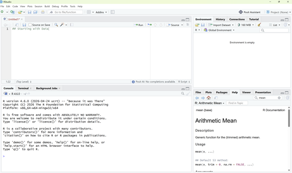
RStudio is divided into 4 “Panes”: the Source for your scripts and documents (top-left, in the default layout), your Environment/History (top-right) which shows all the objects in your working space (Environment) and your command history (History), your Files/Plots/Packages/Help/Viewer (bottom-right), and the R Console (bottom-left). The placement of these panes and their content can be customized (see menu, Tools -> Global Options -> Pane Layout).
Getting set up
It is good practice to keep a set of related data, analyses, and text self-contained in a single folder, called the working directory. All of the scripts within this folder can then use relative paths to files that indicate where inside the project a file is located. Working this way makes it a lot easier to move your project around on your computer and share it with others.
RStudio provides a helpful set of tools to do this through its “Projects” interface, which not only creates a working directory for you, but also remembers its location (allowing you to quickly navigate to it). Go through the steps for creating an “R Project” for this tutorial below.
- Start RStudio.
- Under the
Filemenu, click onNew Project. ChooseNew Directory, thenNew Project. - Enter a name for this new folder (or “directory”), and choose a
convenient location for it. This will be your working
directory for the rest of the day (e.g.,
~/data-carpentry). - Click on
Create Project. - (Optional) Set Preferences to ‘Never’ save workspace in RStudio.
A workspace is your current working environment in R which includes
any user-defined object. By default, all of these objects will be saved,
and automatically loaded, when you reopen your project. Saving a
workspace to .RData can be cumbersome, especially if you
are working with larger datasets, and it can lead to hard to debug
errors by having objects in memory you forgot you had. To turn that off,
go to Tools –> ‘Global Options’ and select the ‘Never’ option for
‘Save workspace to .RData’ on exit.’
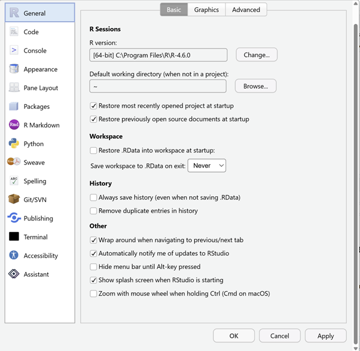
Stretch Challenge (Difficult - 1hr+)
Under the File menu, click on New Project
and choose New Directory like before. Then investigate the
other project structures that are available such as ‘Shiny Web
Application’ or ‘R Package’. If you’re interested in either of these,
have a look at this further information about making your own Shiny Web Application or R
Package.
Organizing your working directory
Using a consistent folder structure across your projects will make it easy to find/file things in the future. This can be especially helpful when you have multiple projects. In general, you may create directories (folders) for scripts, data, and documents.
-
data_raw/&data/Use these folders to store raw data and intermediate datasets you may create for the need of a particular analysis. For the sake of transparency and provenance, you should always keep a copy of your raw data accessible and do as much of your data cleanup and preprocessing programmatically (i.e., with scripts, rather than manually) as possible. Separating raw data from processed data is also a good idea. For example, you could have filesdata_raw/tree_survey.plot1.txtand...plot2.txtkept separate from adata/tree.survey.csvfile generated by thescripts/01.preprocess.tree_survey.Rscript. -
documents/This would be a place to keep outlines, drafts, and other text. -
scripts/This would be the location to keep your R scripts for different analyses or plotting, and potentially a separate folder for your functions (more on that later). - Additional (sub)directories depending on your project needs.
For this workshop, we will need a data_raw/ folder to
store our raw data, and we will use data/ for when we learn
how to export data as CSV files, and a fig/ folder for the
figures that we will save.
- Under the
Filestab on the right of the screen, click onNew Folderand create a folder nameddata_rawwithin your newly created working directory (e.g.,~/data-carpentry/). (Alternatively, typedir.create("data_raw")at your R console.) Repeat these operations to create adataand afigfolder.
We are going to keep the script in the root of our working directory
because we are only going to use one file and it will make things
easier. Create this using the new file button in the top left hand
corner and select R Script, the hit save and name it
data-carpentry-script.
Your working directory should now look like this:
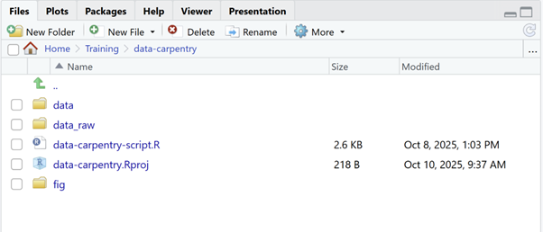
Stretch Challenge (Intermediate - 15 mins)
Try creating the file structure shown below using only commands in the R console.
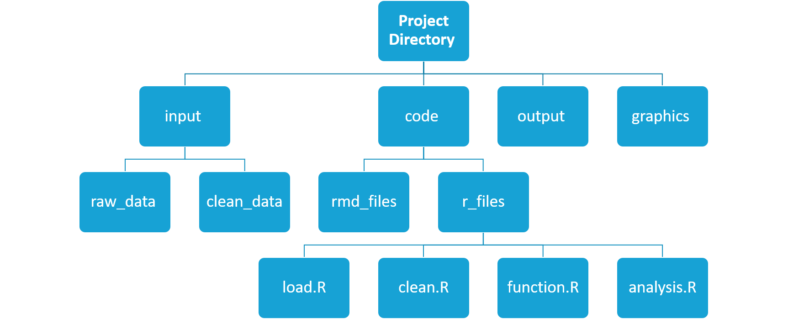
The working directory
The working directory is an important concept to understand. It is the place from where R will be looking for and saving the files. When using R projects the working directory has a .Rproj file in it. When you write code for your project, it should refer to files in relation to the root of your working directory and only need files within this structure.
Using RStudio projects makes this easy and ensures that your working
directory is set properly. If you need to check it, you can use
getwd(). If for some reason your working directory is not
what it should be, you can change it in the RStudio interface by
navigating in the file browser where your working directory should be,
and clicking on the blue gear icon “More”, and select “Set As Working
Directory”. Alternatively you can use
setwd("/path/to/working/directory") to reset your working
directory. However, your scripts should not include this line because it
will fail on someone else’s computer.
Interacting with R
The basis of programming is that we write down instructions for the computer to follow, and then we tell the computer to follow those instructions. We write, or code, instructions in R because it is a common language that both the computer and we can understand. We call the instructions commands and we tell the computer to follow the instructions by executing (also called running) those commands.
There are two main ways of interacting with R: by using the console
or by using script files (plain text files that contain your code). The
console pane (in RStudio, the bottom left panel) is the place where
commands written in the R language can be typed and executed immediately
by the computer. It is also where the results will be shown for commands
that have been executed. You can type commands directly into the console
and press Enter to execute those commands, but they will be
forgotten when you close the session.
Because we want our code and workflow to be reproducible, it is better to type the commands we want in the script editor, and save the script. This way, there is a complete record of what we did, and anyone (including our future selves!) can replicate the results on their computer.
RStudio allows you to execute commands directly from the script
editor by using the Ctrl + Enter shortcut (on
Macs, Cmd + Return will work, too). The
command on the current line in the script (indicated by the cursor) or
all of the commands in the currently selected text will be sent to the
console and executed when you press Ctrl +
Enter. You can find other keyboard shortcuts in this RStudio
cheatsheet about the RStudio IDE.
If R is ready to accept commands, the R console shows a
> prompt. If it receives a command (by typing,
copy-pasting or sent from the script editor using Ctrl +
Enter), R will try to execute it, and when ready, will show
the results and come back with a new > prompt to wait
for new commands.
If R is still waiting for you to enter more data because it isn’t
complete yet, the console will show a + prompt. It means
that you haven’t finished entering a complete command. This is because
you have not ‘closed’ a parenthesis or quotation, i.e. you don’t have
the same number of left-parentheses as right-parentheses, or the same
number of opening and closing quotation marks. When this happens, and
you thought you finished typing your command, click inside the console
window and press Esc; this will cancel the incomplete
command and return you to the > prompt.
Seeking help
Use the built-in RStudio help interface to search for more information on R functions
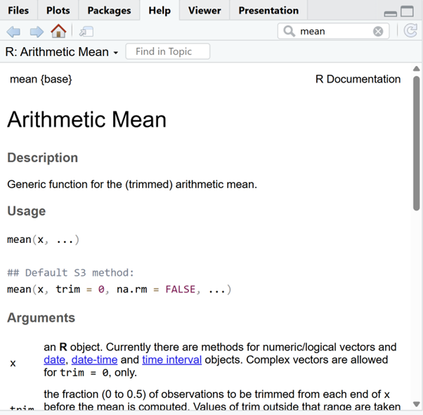
One of the fastest ways to get help, is to use the RStudio help interface. This panel by default can be found at the lower right hand panel of RStudio. As seen in the screenshot, by typing the word “Mean”, RStudio tries to also give a number of suggestions that you might be interested in. The description is then shown in the display window.
I know the name of the function I want to use, but I’m not sure how to use it
If you need help with a specific function, let’s say
lm(), you can type:
R
?lm
I want to use a function that does X, there must be a function for it but I don’t know which one…
If you are looking for a function to do a particular task, you can
use the help.search() function, which is called by the
double question mark ??. However, this only looks through
the installed packages for help pages with a match to your search
request
R
??kruskal
If you can’t find what you are looking for, you can use the rdocumentation.org website that searches through the help files across all packages available.
Finally, a generic Google or internet search “R <task>” will often either send you to the appropriate package documentation or a helpful forum where someone else has already asked your question.
I am stuck… I get an error message that I don’t understand
Start by googling the error message. However, this doesn’t always work very well because often, package developers rely on the error catching provided by R. You end up with general error messages that might not be very helpful to diagnose a problem (e.g. “subscript out of bounds”). If the message is very generic, you might also include the name of the function or package you’re using in your query.
Where to ask for help?
- The other people here; you might also be interested in organizing regular meetings following the workshop to keep learning from each other.
- Your friendly colleagues: if you know someone with more experience than you, they might be able and willing to help you.
-
Stack
Overflow’s
[r]-tag: Most questions have already been answered, but the challenge is to use the right words in the search to find the answers. If your question hasn’t been answered before and is well crafted, chances are you will get an answer in less than 5 min. Remember to follow their guidelines on how to ask a good question.
R Basics
Now that we have a working environment set up we can start on the basics of R.
Creating objects in R
You can get output from R simply by typing math in the console:
R
3 + 5
OUTPUT
[1] 8R
12 / 7
OUTPUT
[1] 1.714286Stretch Challenge (Intermediate - 15 mins)
Using the information above about how and where to ask a question online, find out the r arithmetic operators for the following operations:
- Remainder from integer division (modulus) e.g. remainder of 8/3
- Raise to the power of (exponentiation) e.g. 5 to the power of 2
R
8 %% 3
R
5 ^ 2
However, to do useful and interesting things, we need to assign values to objects.
A value is a piece of information that we want to store and retrieve at some later time, i.e. a number, a sequence of numbers, or even collections of data, for now we will start with numbers and later move onto collections of numbers which in R are called vectors.
An object (or variable) is programming speak for a thing with known properties. You can think of an object as a box with a label, holding the value inside.
To create an object, we need to give it a name followed by the
assignment operator <-, and the value we want to give
it:
R
weight_kg <- 55
<- is the assignment operator. It assigns values on
the right to objects on the left. So, after executing
weight_kg <- 55, the value of weight_kg is
55. The arrow can be read as 55 goes into
weight_kg.
What is my object?
Once an object is created we can get information about that object in the Environment tab in the top right of RStudio. For example, ‘weight_kg’ has the type numeric length 1 and value 55. Make sure to keep an eye on the other values that appear here when using RStudio to understand what objects you have. This tab is great for small variables, when inspecting larger or more complicated objects it is better to use more advanced methods we will cover later on.
How do I name my objects?
Objects can be given any name such as x,
current_temperature, or subject_id. You want
your object names to be explicit and not too long.
- They cannot start with a number (
2xis not valid, butx2is). - R is case sensitive (e.g.,
weight_kgis different fromWeight_kg). - There are some names that cannot be used because they are the names
of fundamental functions in R (e.g.,
if,else,for, see here for a complete list). In general, even if it’s allowed, it’s best to not use other function names (e.g.,c,T,mean,data,df,weights). If in doubt, check the help to see if the name is already in use. - It’s also best to avoid dots (
.) within names. Many function names in R itself have them and dots also have a special meaning (methods) in R and other programming languages. To avoid confusion, don’t include dots in names.
It is also recommended to use nouns for object names, and verbs for function names. It’s important to be consistent in the styling of your code (where you put spaces, how you name objects, etc.). Using a consistent coding style makes your code clearer to read for your future self and your collaborators. In R, three popular style guides are - Google’s - Jean Fan’s - tidyverse’s. The tidyverse’s is very comprehensive and may seem overwhelming at first.
Objects vs. variables
What are known as objects in R are known as
variables in many other programming languages. Depending on
the context, object and variable can have
drastically different meanings. However, in this lesson, the two words
are used synonymously. For more information see: https://cran.r-project.org/doc/manuals/r-release/R-lang.html#Objects
When assigning a value to an object, R does not print anything. You can force R to print the value by using parentheses or by typing the object name:
R
weight_kg <- 55 # doesn't print anything
(weight_kg <- 55) # but putting parenthesis around the call prints the value of `weight_kg`
weight_kg # and so does typing the name of the object
Now that R has weight_kg in memory, we can do arithmetic
with it. For instance, we may want to convert this weight into pounds
(weight in pounds is 2.2 times the weight in kg):
R
2.2 * weight_kg
OUTPUT
[1] 121We can also change an object’s value by assigning it a new one:
R
weight_kg <- 57.5
2.2 * weight_kg
OUTPUT
[1] 126.5This means that assigning a value to one object does not change the
values of other objects. For example, let’s store the animal’s weight in
pounds in a new object, weight_lb:
R
weight_lb <- 2.2 * weight_kg
and then change weight_kg to 100.
R
weight_kg <- 100
What do you think is the current content of the object
weight_lb? 126.5 or 220?
Comments
The comment character in R is #, anything to the right
of a # in a script will be ignored by R. It is best
practice to leave notes and explanations in your scripts. So that others
can understand your code and that you can remember what each line
does.
Objects and Values
What are the values after each statement in the following?
R
mass <- 47.5 # mass?
age <- 122 # age?
mass <- mass * 2.0 # mass?
age <- age - 20 # age?
mass_index <- mass/age # mass_index?
mass <- 47.5 # mass = 47.5 age <- 122 # age = 122 mass <- mass * 2.0 # mass = 95 age <- age - 20 # age = 102 mass_index <- mass/age # mass_index = 0.9313725
Functions and their arguments
Functions automate sets of commands including operations assignments,
etc. Many functions are predefined, or can be made available by
importing R packages (more on that later). A function usually
takes one or more inputs called arguments. Functions often (but
not always) return a value. A typical example would be the
function sqrt(). The input (the argument) must be a number,
and the return value (in fact, the output) is the square root of that
number. Executing a function (‘running it’) is called calling
the function. An example of a function call is:
R
weight_kg <- sqrt(10)
Here, the value of ten is given to the
sqrt() function, the sqrt() function
calculates the square root, and returns the value which is then assigned
to the object weight_kg. This function is very simple,
because it takes just one argument.
The return ‘value’ of a function need not be numerical (like that of
sqrt()), and it also does not need to be a single item: it
can be a set of things, or even a dataset. We’ll see that when we read
data files into R.
Arguments can be anything, not only numbers or filenames, but also other objects. Exactly what each argument means differs per function, and must be looked up in the documentation (see below). Some functions take arguments which may either be specified by the user, or, if left out, take on a default value: these are called options. Options are typically used to alter the way the function operates, such as whether it ignores ‘bad values’, or what symbol to use in a plot. However, if you want something specific, you can specify a value of your choice which will be used instead of the default.
Let’s try a function that can take multiple arguments:
round().
R
round(3.14159)
OUTPUT
[1] 3Here, we’ve called round() with just one argument,
3.14159, and it has returned the value 3.
That’s because the default is to round to the nearest whole number. If
we want more digits we can see how to do that by getting information
about the round function. We can use
args(round) to find what arguments it takes, or look at the
help for this function using ?round.
R
args(round)
OUTPUT
function (x, digits = 0)
NULLR
?round
We see that if we want a different number of digits, we can type
digits = 2 or however many we want.
R
round(3.14159, digits = 2)
OUTPUT
[1] 3.14Stretch Challenge (Intermediate - 10 mins)
Use
args()to query the arguments for the functions used so far includingdir.create(),mean(), andsqrt()Use
?(e.g.?length) to learn more about the functions and their arguments.Write your own function and then inspect it using
args(). You can use the basic function below as a template.
R
add_together <- function (x, y) {
x + y
}
Vectors and data types
A vector is the most common and basic data type in R. A vector is
composed by a series of values, which can be either numbers or
characters. We can assign a series of values to a vector using the
c() function. For example we can create a vector of animal
weights and assign it to a new object weight_g:
R
weight_g <- c(50, 60, 65, 82)
weight_g
OUTPUT
[1] 50 60 65 82A vector can also contain characters:
R
animals <- c("mouse", "rat", "dog")
animals
OUTPUT
[1] "mouse" "rat" "dog"The quotes around “mouse”, “rat”, etc. are essential here to tell R that these are characters and not objects.
There are many functions that allow you to inspect the content of a
vector. length() tells you how many elements are in a
particular vector:
R
length(weight_g)
OUTPUT
[1] 4R
length(animals)
OUTPUT
[1] 3An important feature of a vector, is that all of the elements are the
same type of data. The function class() indicates what kind
of object you are working with:
R
class(weight_g)
OUTPUT
[1] "numeric"R
class(animals)
OUTPUT
[1] "character"The function str() provides an overview of the structure
of an object and its elements. It is a useful function when working with
large and complex objects:
R
str(weight_g)
OUTPUT
num [1:4] 50 60 65 82R
str(animals)
OUTPUT
chr [1:3] "mouse" "rat" "dog"You can use the c() function to add other elements to
your vector:
R
weight_g <- c(weight_g, 90) # add to the end of the vector
weight_g <- c(30, weight_g) # add to the beginning of the vector
weight_g
OUTPUT
[1] 30 50 60 65 82 90In the first line, we take the original vector weight_g,
add the value 90 to the end of it, and save the result back
into weight_g. Then we add the value 30 to the
beginning, again saving the result back into weight_g.
We can do this over and over again to grow a vector, or assemble a dataset. As we program, this may be useful to add results that we are collecting or calculating.
A vector will have one of the following data types:
-
"character"for text -
"numeric"or"double"for non-interger numbers -
"logical"forTRUEandFALSE(the boolean data type) -
"integer"for integer numbers (e.g.,2L, theLindicates to R that it’s an integer) -
"complex"to represent complex numbers with real and imaginary parts (e.g.,1 + 4i) and that’s all we’re going to say about them -
"raw"for bitstreams that we won’t discuss further
You can check the type of your vector using the typeof()
function and inputting your vector as the argument.
Vectors are one of the many data structures that R
uses. Other important ones are lists (list), matrices
(matrix), data frames (data.frame), factors
(factor) and arrays (array).
Data Types
We’ve seen that atomic vectors can be of type character, numeric (or double), integer, and logical. But what happens if we try to mix these types in a single vector?
- What will happen in each of these examples? (hint: use
class()to check the data type of your objects):
R
num_char <- c(1, 2, 3, "a")
num_logical <- c(1, 2, 3, TRUE)
char_logical <- c("a", "b", "c", TRUE)
tricky <- c(1, 2, 3, "4")
- How many values in
combined_logicalare"TRUE"(as a character) in the following example (reusing the 2..._logicals from above):
R
combined_logical <- c(num_logical, char_logical)
- You’ve probably noticed that objects of different types get converted into a single, shared type within a vector. In R, we call converting objects from one class into another class coercion. These conversions happen according to a hierarchy, whereby some types get preferentially coerced into other types. Can you draw a diagram that represents the hierarchy of how these data types are coerced?
R
num_char <- c(1, 2, 3, "a") # character
num_logical <- c(1, 2, 3, TRUE) #numeric
char_logical <- c("a", "b", "c", TRUE) #character
tricky <- c(1, 2, 3, "4") #character
- Only one. There is no memory of past data types, and the coercion
happens the first time the vector is evaluated. Therefore, the
TRUEinnum_logicalgets converted into a1before it gets converted into"1"incombined_logical.
logical → numeric → character ← logical
Stretch Challenge (Intermediate - 20 mins)
Look up the functions seq() and rep() Use
these functions to create the following vectors:
1 2 3 4 5 1 2 3 4 5 1 2 3 4 5
3 6 9 12 15 18 21 24 27 30
Note: there are several possible solutions
R
rep(1:5, 3)
R
seq(3, 30, 3)
Subsetting vectors
If we want to extract one or several values from a vector, we must provide one or several indices in square brackets. For instance:
R
animals <- c("mouse", "rat", "dog", "cat")
animals[2]
OUTPUT
[1] "rat"R
animals[c(3, 2)]
OUTPUT
[1] "dog" "rat"We can also repeat the indices to create an object with more elements than the original one:
R
more_animals <- animals[c(1, 2, 3, 2, 1, 4)]
more_animals
OUTPUT
[1] "mouse" "rat" "dog" "rat" "mouse" "cat"Conditional subsetting
Another common way of subsetting is by using a logical vector.
TRUE will select the element with the same index, while
FALSE will not:
R
weight_g <- c(21, 34, 39, 54, 55)
weight_g[c(TRUE, FALSE, FALSE, TRUE, TRUE)]
OUTPUT
[1] 21 54 55Typically, these logical vectors are not typed by hand, but are the output of other functions or logical tests. For instance, if you wanted to select only the values above 50:
R
weight_g > 50 # will return logicals with TRUE for the indices that meet the condition
OUTPUT
[1] FALSE FALSE FALSE TRUE TRUER
## so we can use this to select only the values above 50
weight_g[weight_g > 50]
OUTPUT
[1] 54 55You can combine multiple tests using & (both
conditions are true, AND) or | (at least one of the
conditions is true, OR):
R
weight_g[weight_g > 30 & weight_g < 50]
OUTPUT
[1] 34 39R
weight_g[weight_g <= 30 | weight_g == 55]
OUTPUT
[1] 21 55R
weight_g[weight_g >= 30 & weight_g == 21]
OUTPUT
numeric(0)Here, > for “greater than”, < stands
for “less than”, <= for “less than or equal to”, and
== for “equal to”. The double equal sign == is
a test for numerical equality between the left and right hand sides, and
should not be confused with the single = sign, which
performs variable assignment (similar to <-).
A common task is to search for certain strings in a vector. One could
use the “or” operator | to test for equality to multiple
values, but this can quickly become tedious. The function
%in% allows you to test if any of the elements of a search
vector are found:
R
animals <- c("mouse", "rat", "dog", "cat")
animals[animals == "cat" | animals == "rat"] # returns both rat and cat
OUTPUT
[1] "rat" "cat"R
animals %in% c("rat", "cat", "dog", "duck", "goat")
OUTPUT
[1] FALSE TRUE TRUE TRUER
animals[animals %in% c("rat", "cat", "dog", "duck", "goat")]
OUTPUT
[1] "rat" "dog" "cat"Stretch Challenge (Difficult - 10 mins)
R
creatures <- c('rat', 'sheep','squirrel', 'tiger', 'whale', 'dolphin',
'jellyfish','octopus', 'shark')
mammals <- c('rat', 'sheep','squirrel', 'tiger', 'whale', 'dolphin')
sea_creatures <- c('jellyfish', 'whale', 'octopus', 'shark', 'dolphin')
Create a vector of creatures that are either mammals or sea creatures but not both
R
creatures[!(creatures %in% mammals & creatures %in% sea_creatures)]
Missing data
As R was designed to analyze datasets it includes the concept of
missing data. Missing data are represented in vectors as
NA.
When doing operations on numbers, most functions will return
NA if the data you are working with include missing values.
This feature makes it harder to overlook the cases where you are dealing
with missing data. You can add the argument na.rm = TRUE to
calculate the result while ignoring the missing values.
R
heights <- c(2, 4, 4, NA, 6)
mean(heights)
max(heights)
mean(heights, na.rm = TRUE)
max(heights, na.rm = TRUE)
If your data include missing values, you may want to become familiar
with the functions is.na(), na.omit(), and
complete.cases(). See below for examples.
R
## Extract those elements which are not missing values.
heights[!is.na(heights)]
## Returns the object with incomplete cases removed.
#The returned object is an atomic vector of type `"numeric"` (or #`"double"`).
na.omit(heights)
## Extract those elements which are complete cases.
#The returned object is an atomic vector of type `"numeric"` (or #`"double"`).
heights[complete.cases(heights)]
Recall that you can use the typeof() function to find
the type of your atomic vector.
Challenge
R
heights <- c(63, 69, 60, 65, NA, 68, 61, 70, 61, 59, 64, 69, 63, 63, NA, 72, 65, 64, 70, 63, 65)
Using this vector of heights in inches, create a new vector,
heights_no_na, with the NAs removed.Use the function
median()to calculate the median of theheightsvector.Use R to figure out how many people in the set are taller than 67 inches.
R
heights <- c(63, 69, 60, 65, NA, 68, 61, 70, 61, 59, 64, 69, 63, 63, NA, 72, 65, 64, 70, 63, 65)
heights_no_na <- heights[!is.na(heights)]
median(heights, na.rm = TRUE)
heights_above_67 <- heights_no_na[heights_no_na > 67]
length(heights_above_67)
Stretch Challenge (Fiendish - 1hr+)
Have a look at a package called mice for some more advanced methods of dealing with multivariate missing data.
Now that we have learned how to write scripts, and the basics of R’s data structures, we are ready to start working with the Portal dataset we have been using in the other lessons, and learn about data frames. —
Load Data
We have now learnt enough of the basics of R to be able to use R in place of spreadsheets. As the previous lessons will have shown you spreadsheets can be good for small amounts of data that can be managed by hand. With R will will be able to load large sets of data and create readable, reliable, and reproducible data analysis scripts.
Presentation of the Survey Data
We are investigating the animal species diversity and weights found within plots at our study site. The dataset is stored as a comma separated value (CSV) file. Each row holds information for a single animal, and the columns represent:
| Column | Description |
|---|---|
| record_id | Unique id for the observation |
| month | month of observation |
| day | day of observation |
| year | year of observation |
| plot_id | ID of a particular plot |
| species_id | 2-letter code |
| sex | sex of animal (“M”, “F”) |
| hindfoot_length | length of the hindfoot in mm |
| weight | weight of the animal in grams |
| genus | genus of animal |
| species | species of animal |
| taxon | e.g. Rodent, Reptile, Bird, Rabbit |
| plot_type | type of plot |
We are going to use the R function download.file() to
download the CSV file that contains the survey data from Figshare. Lets
investigate the download.file() function.
In the R console type ?download.file and then look at
the help view that will open on the bottom right. We can see a
description and a list of arguments. We need the first two,
url and destfile.
- url: A character string giving a source URL for the data we use “https://ndownloader.figshare.com/files/2292169”.
- destfile: A character string (or vector) denoting the destination and name for the downloaded data we use “data_raw/portal_data_joined.csv”.
You’ll need the folder on your machine called “data_raw” in your working envronment which we made earlier. So this command downloads a file from Figshare, names it “portal_data_joined.csv” and adds it to the preexisting folder named “data_raw”.
R
download.file(url = "https://ndownloader.figshare.com/files/2292169",
destfile = "data_raw/portal_data_joined.csv")
You are now ready to load the data we use read.csv() to
load the content of the CSV file as an object of class
data.frame, we can again use ? and find the
arguments of ?read.csv. This time we just need the first
argument file which we give the location of the file
i.e. destfile from before.
Note
It would be worth your time looking over all the arguments of
read.csv as reading in CSV files will likely be a useful
skill during your research.
R
surveys <- read.csv("data_raw/portal_data_joined.csv")
This statement doesn’t produce any output because, as you might recall, assignments don’t display anything. If we want to check that our data has been loaded, we can check the environment pane in RStudio.
To check the top (the first 6 lines) of this data frame we use the
function head():
R
head(surveys)
OUTPUT
record_id month day year plot_id species_id sex hindfoot_length weight
1 1 7 16 1977 2 NL M 32 NA
2 72 8 19 1977 2 NL M 31 NA
3 224 9 13 1977 2 NL NA NA
4 266 10 16 1977 2 NL NA NA
5 349 11 12 1977 2 NL NA NA
6 363 11 12 1977 2 NL NA NA
genus species taxa plot_type
1 Neotoma albigula Rodent Control
2 Neotoma albigula Rodent Control
3 Neotoma albigula Rodent Control
4 Neotoma albigula Rodent Control
5 Neotoma albigula Rodent Control
6 Neotoma albigula Rodent ControlR
## Try also
View(surveys)
What are data frames?
Data frames are a data structure for most tabular data, and what we use for statistics and plotting.
A data frame can be created by hand, but most commonly they are
generated by the functions read.csv() or
read.table(); in other words, when importing spreadsheets
or other tabulated data.
A data frame is the representation of data in the format of a table where the columns are vectors that all have the same length. Because columns are vectors, each column must contain a single type of data (e.g., characters, integers, factors). For example, here is a figure depicting a data frame comprising a numeric, a character, and a logical vector.

We can see this when inspecting the structure of a
data frame with the function str():
R
str(surveys)
Inspecting data.frame Objects
We already saw how the functions head() and
str() can be useful to check the content and the structure
of a data frame. Here is a non-exhaustive list of functions to get a
sense of the content/structure of the data. Let’s try them out!
- Size:
-
dim(surveys)- returns a vector with the number of rows in the first element, and the number of columns as the second element (the dimensions of the object) -
nrow(surveys)- returns the number of rows -
ncol(surveys)- returns the number of columns
-
- Content:
-
head(surveys)- shows the first 6 rows -
tail(surveys)- shows the last 6 rows
-
- Names:
-
names(surveys)- returns the column names (synonym ofcolnames()fordata.frameobjects) -
rownames(surveys)- returns the row names
-
- Summary:
-
str(surveys)- structure of the object and information about the class, length and content of each column -
summary(surveys)- summary statistics for each column
-
Inspecting Dataframes
Based on the output of str(surveys), can you answer the
following questions?
- What is the class of the object
surveys? - How many rows and how many columns are in this object?
R
str(surveys)
- class: data frame
- how many rows: 34786, how many columns: 13
Indexing and subsetting data frames
Our survey data frame has rows and columns (it has 2 dimensions), if we want to extract some specific data from it, we need to specify the “coordinates” we want from it. Row numbers come first, followed by column numbers. However, note that different ways of specifying these coordinates lead to results with different classes.
R
# first element in the first column of the data frame (as a vector)
surveys[1, 1]
# first element in the 6th column (as a vector)
surveys[1, 6]
# first column of the data frame (as a vector)
surveys[, 1]
# first column of the data frame (as a data.frame)
surveys[1]
# first three elements in the 7th column (as a vector)
surveys[1:3, 7]
# the 3rd row of the data frame (as a data.frame)
surveys[3, ]
# equivalent to head_surveys <- head(surveys)
head_surveys <- surveys[1:6, ]
: is a special function that creates numeric vectors of
integers in increasing or decreasing order, test 1:10 and
10:1 for instance.
You can also exclude certain indices of a data frame using the
“-” sign:
R
surveys[, -1] # The whole data frame, except the first column
surveys[-(7:34786), ] # Equivalent to head(surveys)
Data frames can be subset by calling indices (as shown previously), but also by calling their column names directly:
R
surveys["species_id"] # Result is a data.frame
surveys[, "species_id"] # Result is a vector
surveys[["species_id"]] # Result is a vector
surveys$species_id # Result is a vector
In RStudio, you can use the autocompletion feature to get the full and correct names of the columns.
Subsetting Dataframes
Create a
data.frame(surveys_200) containing only the data in row 200 of thesurveysdataset.Try running
n_rows <- nrow(surveys). Notice hownrow()gave you the number of rows in adata.frame? Create a new data frame (surveys_last) including only the last row.Use
nrow()to extract the row that is in the middle of the data frame. Store the content of this row in an object namedsurveys_middle.Combine
nrow()with the-notation above to reproduce the behavior ofhead(surveys), keeping just the first through 6th rows of the surveys dataset.
R
surveys_200 <- surveys[200, ]
R
surveys_last <- surveys[n_rows, ]
R
surveys_middle <- surveys[n_rows / 2, ]
R
surveys_head <- surveys[-(7:n_rows), ]
Stretch Challenge (Intermediate - 10 mins)
Create a subset of the surveys dataframe that contains
only observations from December of the year 2000. The dataframe should
only contain the variables record_id, genus, and species.
R
survey_dec_2000 <- surveys[surveys$month == 12 & surveys$year == 2000, c('record_id', 'genus', 'species')]
Factors
Factors are very useful and actually contribute to making R particularly well suited to working with data. So we are going to spend a little time introducing them.
Factors represent categorical data. They are stored as integers associated with labels and they can be ordered or unordered. While factors look (and often behave) like character vectors, they are actually treated as integer vectors by R. So you need to be very careful when treating them as strings.
Once created, factors can only contain a pre-defined set of values, known as levels. By default, R always sorts levels in alphabetical order. For instance, if you have a factor with 2 levels:
R
sex <- factor(c("male", "female", "female", "male"))
R will assign 1 to the level "female" and
2 to the level "male" (because f
comes before m, even though the first element in this
vector is "male"). You can see this by using the function
levels() and you can find the number of levels using
nlevels():
R
levels(sex)
nlevels(sex)
Sometimes, the order of the factors does not matter, other times you
might want to specify the order because it is meaningful (e.g., “low”,
“medium”, “high”), it improves your visualization, or it is required by
a particular type of analysis. Here, one way to reorder our levels in
the sex vector would be:
R
sex # current order
OUTPUT
[1] male female female male
Levels: female maleR
sex <- factor(sex, levels = c("male", "female"))
sex # after re-ordering
OUTPUT
[1] male female female male
Levels: male femaleIn R’s memory, these factors are represented by integers (1, 2, 3),
but are more informative than integers because factors are self
describing: "female", "male" is more
descriptive than 1, 2. Which one is “male”?
You wouldn’t be able to tell just from the integer data. Factors, on the
other hand, have this information built in. It is particularly helpful
when there are many levels (like the species names in our example
dataset).
Converting factors
If you need to convert a factor to a character vector, you use
as.character(x).
R
as.character(sex)
In some cases, you may have to convert factors where the levels
appear as numbers (such as concentration levels or years) to a numeric
vector. For instance, in one part of your analysis the years might need
to be encoded as factors (e.g., comparing average weights across years)
but in another part of your analysis they may need to be stored as
numeric values (e.g., doing math operations on the years). This
conversion from factor to numeric is a little trickier. The
as.numeric() function returns the index values of the
factor, not its levels, so it will result in an entirely new (and
unwanted in this case) set of numbers. One method to avoid this is to
convert factors to characters, and then to numbers.
Another method is to use the levels() function.
Compare:
R
year_fct <- factor(c(1990, 1983, 1977, 1998, 1990))
as.numeric(year_fct) # Wrong! And there is no warning...
as.numeric(levels(year_fct))[year_fct]
Notice that in the levels() approach, three important
steps occur:
- We obtain all the factor levels using
levels(year_fct) - We convert these levels to numeric values using
as.numeric(levels(year_fct)) - We then access these numeric values using the underlying integers of
the vector
year_fctinside the square brackets
Renaming factors
When your data is stored as a factor, you can use the
plot() function to get a quick glance at the number of
observations represented by each factor level. Let’s look at the number
of males and females captured over the course of the experiment:
R
## bar plot of the number of females and males captured during the experiment:
plot(as.factor(surveys$sex))
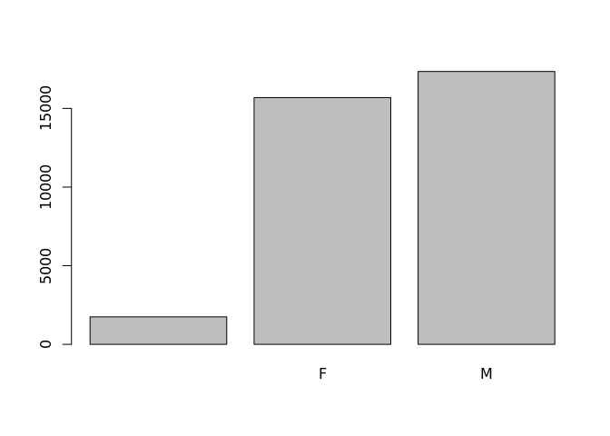
In addition to males and females, there are about 1700 individuals for which the sex information hasn’t been recorded. Additionally, for these individuals, there is no label to indicate that the information is missing or undetermined. Let’s rename this label to something more meaningful. Before doing that, we’re going to pull out the data on sex and work with that data, so we’re not modifying the working copy of the data frame:
R
sex <- factor(surveys$sex)
head(sex)
OUTPUT
[1] M M
Levels: F MR
levels(sex)
OUTPUT
[1] "" "F" "M"R
levels(sex)[1] <- "undetermined"
levels(sex)
OUTPUT
[1] "undetermined" "F" "M"R
head(sex)
OUTPUT
[1] M M undetermined undetermined undetermined
[6] undetermined
Levels: undetermined F MFactors
- Rename “F” and “M” to “female” and “male” respectively.
- Now that we have renamed the factor level to “undetermined”, can you recreate the barplot such that “undetermined” is last (after “male”)?
R
levels(sex)[2:3] <- c('female', 'male')
sex <- factor(sex, levels = c('female', 'male', 'undetermined'))
plot(sex)
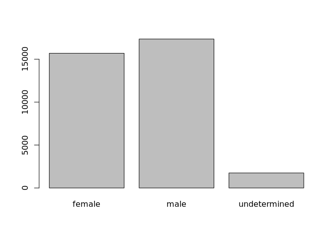
Using stringsAsFactors=FALSE
In R versions previous to 4.0, when building or importing a data frame, the columns that contain characters (i.e. text) are coerced (= converted) into factors by default. However, since version 4.0 columns that contain characters (i.e. text) are NOT coerced (= converted) into factors.
Depending on what you want to do with the data, you may want to keep
these columns as character or you may want them to be
factor.
read.csv() and read.table() have an
argument called stringsAsFactors which can be set to
FALSE for character or TRUE for factor.
In most cases, it is preferable to keep
stringsAsFactors = FALSE when importing data and to convert
as a factor only the columns that require this data type.
R
## Compare the difference between our data read as `factor` vs `character`.
surveys <- read.csv("data_raw/portal_data_joined.csv", stringsAsFactors = TRUE)
str(surveys)
surveys <- read.csv("data_raw/portal_data_joined.csv", stringsAsFactors = FALSE)
str(surveys)
## Convert the column "plot_type" into a factor
surveys$plot_type <- factor(surveys$plot_type)
The automatic conversion of data type is sometimes a blessing, sometimes an annoyance. Be aware that it exists, learn the rules, and double check that data you import in R are of the correct type within your data frame.
You have now completed all the day one learning objectives. It is
very common to make mistakes in programming languages, identifying and
solving debugging these mistakes makes up a large part of
the programming skill-set. Becoming familiar with the basics we have
covered today will set you on a path to being a confident R
programmer.
- Although R has a steeper learning curve than some other data analysis software, R has many advantages - R is interdisciplinary, extensible, great for data wrangling and reproducibility, and produces high quality graphics.
- Values can be assigned to objects, which have a number of attributes. Objects can then be used in arithmetic operations (and more).
- Functions automate sets of commands, many are predefined but it’s also possible to write your own. Functions usually take one or more inputs (called arguments) and often return a value.
- A vector is the most common and basic data structure in R. A vector is composed of a series of values, which can be either numbers or characters.
- Vectors can be subset by providing one or several indices in square brackets or by using a logical vector (often the output of a logical test).
- Missing data are represented in vectors as NA. You can add the
argument
na.rm = TRUEto calculate the result while ignoring the missing values. - CSV files can be read in using
read.csv(). - Data frames are a data structure for most tabular data, and what we use for statistics and plsotting.
- It is possible to subset dataframes by specifying the coordinates in square brackets. Row numbers come first, followed by column numbers.
- Factors represent categorical data. They are stored as integers associated with labels and they can be ordered or unordered. Factors can only contain a pre-defined set of values, known as levels.
Content from Day 2: Manipulating Data
Last updated on 2026-05-22 | Edit this page
Overview
Questions
- How can I select specific columns or rows from a data frame?
- How can I combine multiple data manipulation steps efficiently?
- How can I create new columns, summarize data, and reshape data frames?
- How do I handle dates in R and export data to a file?
Objectives
- Describe the purpose of the
dplyrandtidyrpackages. - Select certain columns in a data frame with the
dplyrfunctionselect. - Select certain rows in a data frame according to filtering
conditions with the
dplyrfunctionfilter. - Link the output of one
dplyrfunction to the input of another function with the ‘pipe’ operator|>. - Add new columns to a data frame that are functions of existing
columns with
mutate. - Use the split-apply-combine concept for data analysis.
- Use
summarize,group_by, andcountto split a data frame into groups of observations, apply summary statistics for each group, and then combine the results. - Describe the concept of a wide and a long table format and for which purpose those formats are useful.
- Describe what key-value pairs are.
- Format dates.
- Reshape a data frame from long to wide format and back with the
pivot_widerandpivot_longercommands from thetidyrpackage. - Export a data frame to a .csv file.
Data Manipulation using dplyr and
tidyr
Packages in R are basically sets of additional functions that let you
do more stuff. The functions we’ve been using so far, like
str() or data.frame(), come built into R;
packages give you access to more of them. Before you use a package for
the first time you need to install it on your machine, and then you
should import it in every subsequent R session when you need it. You
should already have installed the
tidyverse package. This is an
“umbrella-package” that installs several packages useful for data
analysis which work together well such as
tidyr,
dplyr,
ggplot2,
tibble, etc.
The tidyverse package tries to address
3 common issues that arise when doing data analysis with some of the
functions that come with R:
- The results from a base R function sometimes depend on the type of data.
- Using R expressions in a non standard way, which can be confusing for new learners.
- Hidden arguments, having default operations that new learners are not aware of.
If we haven’t already done so, we can type
install.packages("tidyverse") straight into the console. In
fact, it’s better to write this in the console than in our script for
any package, as there’s no need to re-install packages every time we run
the script.
Then, to load the package type:
R
## load the tidyverse packages, incl. dplyr
library(tidyverse)
Getting started with Tidyverse
We’ll read in our data using the read_csv() function,
from the tidyverse package readr, instead
of read.csv().
R
surveys <- read_csv("data_raw/portal_data_joined.csv")
You will see the message
Parsed with column specification, followed by each column
name and its data type. When you execute read_csv on a data
file, it looks through the first 1000 rows of each column and guesses
the data type for each column as it reads it into R. For example, in
this dataset, read_csv reads weight as
col_double (a numeric data type), and species
as col_character. You have the option to specify the data
type for a column manually by using the col_types argument
in read_csv.
R
## inspect the data
str(surveys)
R
## preview the data
View(surveys)
Notice that the class of the data is now tbl_df
This is referred to as a “tibble”. Tibbles tweak some of the behaviors of the data frame objects we introduced in the previous lesson. The data structure is very similar to a data frame. For our purposes the only difference is that, in addition to displaying the data type of each column under its name, it only prints the first few rows of data and only as many columns as fit on one screen.
What are dplyr and
tidyr?
The package dplyr provides easy tools
for the most common data manipulation tasks, built to work directly with
data frames.
The package tidyr addresses the common
problem of wanting to reshape your data for plotting and use by
different R functions. Sometimes we want data sets where we have one row
per measurement. Sometimes we want a data frame where each measurement
type has its own column, and rows are instead more aggregated groups
(e.g., a time period, an experimental unit like a plot or a batch
number). Moving back and forth between these formats is non-trivial, and
tidyr gives you tools for this and more
sophisticated data manipulation.
Note
An additional feature of dplyr is the
ability to work directly with data stored in an external database. The
benefits of doing this are that the data can be managed natively in a
relational database, queries can be conducted on that database, and only
the results of the query are returned. This addresses a common problem
with R in that all operations are conducted in-memory and thus the
amount of data you can work with is limited by available memory. The
database connections essentially remove that limitation in that you can
connect to a database of many hundreds of GB, conduct queries on it
directly, and pull back into R only what you need for analysis.
To learn more about dplyr and
tidyr after the workshop, you may want to
check out this handy data
transformation with dplyr cheatsheet
and this one about
tidyr.
Stretch Challenge (Difficult - 30 mins)
Install and load dplyr and tidyr within your project environment.
This is great for making your code reproducible. You can do this using
the package renv.
If you have more packages loaded, filter and select from dplyr can be
overwritten by functions of the same name in different packages. Use
dplyr::select or prioritize() from the package
needs to ensure you’re using the correct version of the
function.
Managing Data with dplyr
We’re going to learn some of the most common
dplyr functions:
-
select(): subset columns -
filter(): subset rows on conditions -
mutate(): create new columns by using information from other columns -
group_by()andsummarize(): create summary statistics on grouped data -
arrange(): sort results -
count(): count discrete values
Selecting columns and filtering rows
To select columns of a data frame, use select(). The
first argument to this function is the data frame
(surveys), and the subsequent arguments are the columns to
keep.
R
select(surveys, plot_id, species_id, weight)
To select all columns except certain ones, put a “-” in front of the variable to exclude it.
R
select(surveys, -record_id, -species_id)
This will select all the variables in surveys except
record_id and species_id.
To choose rows based on a specific criterion, use
filter():
R
filter(surveys, year == 1995)
Pipes
What if you want to select and filter at the same time? There are three ways to do this: use intermediate steps, nested functions, or pipes.
With intermediate steps, you create a temporary data frame and use that as input to the next function, like this:
R
surveys2 <- filter(surveys, weight < 5)
surveys_sml <- select(surveys2, species_id, sex, weight)
This is readable, but can clutter up your workspace with lots of objects that you have to name individually. With multiple steps, that can be hard to keep track of.
You can also nest functions (i.e. one function inside of another), like this:
R
surveys_sml <- select(filter(surveys, weight < 5), species_id, sex, weight)
This is handy, but can be difficult to read if too many functions are nested, as R evaluates the expression from the inside out (in this case, filtering, then selecting).
The last, and best, option is to use pipes. Pipes let you
take the output of one function and send it directly to the next, which
is useful when you need to do many things to the same dataset. Pipes in
R look like |> and are included in base R (a recent
addition).
Note: You may also see the older version of the pipe which looks like
%>% and is made available via the
magrittr package, installed automatically
with dplyr. For our purposes, these pipes
do the same thing.
R
surveys |>
filter(weight < 5) |>
select(species_id, sex, weight)
In the above code, we use the pipe to send the surveys
dataset first through filter() to keep rows where
weight is less than 5, then through select()
to keep only the species_id, sex, and
weight columns. Since |> takes the object
on its left and passes it as the first argument to the function on its
right, we don’t need to explicitly include the data frame as an argument
to the filter() and select() functions any
more.
Some may find it helpful to read the pipe like the word “then”. For
instance, in the above example, we took the data frame
surveys, then we filter-ed for rows
with weight < 5, then we selected
columns species_id, sex, and
weight. The dplyr functions
by themselves are somewhat simple, but by combining them into linear
workflows with the pipe, we can accomplish more complex manipulations of
data frames.
If we want to create a new object with this smaller version of the data, we can assign it a new name:
R
surveys_sml <- surveys |>
filter(weight < 5) |>
select(species_id, sex, weight)
surveys_sml
Note that the final data frame is the leftmost part of this expression.
Challenge
Using pipes, subset the surveys data to include animals
collected before 1995 and retain only the columns year,
sex, and weight.
R
surveys |>
filter(year < 1995) |>
select(year, sex, weight)
Stretch Challenge (Intermediate - 15 mins)
Create surveys_final using as few lines of code as
possible and using pipes to remove the intermediary variables.
R
surveys_2 <- filter(surveys, year > 2000)
surveys_3 <- filter(surveys_2, year != 2001)
surveys_4 <- filter(surveys_3, plot_type == 'Control')
surveys_5 <- select(surveys_4, record_id, month, day, year, sex, weight)
surveys_final <- select(surveys_5, -day)
R
surveys_final <- surveys |>
filter(year > 2000, year != 2001, plot_type == 'Control') |>
select(record_id, month, year, sex, weight)
Mutate
Frequently you’ll want to create new columns based on the values in
existing columns, for example to do unit conversions, or to find the
ratio of values in two columns. For this we’ll use
mutate().
To create a new column of weight in kg:
R
surveys |>
mutate(weight_kg = weight / 1000)
You can also create a second new column based on the first new column
within the same call of mutate():
R
surveys |>
mutate(weight_kg = weight / 1000,
weight_lb = weight_kg * 2.2)
If this runs off your screen and you just want to see the first few
rows, you can use a pipe to view the head() of the data.
(Pipes work with non-dplyr functions, too,
as long as the dplyr or
magrittr package is loaded).
R
surveys |>
mutate(weight_kg = weight / 1000) |>
head()
The first few rows of the output are full of NAs, so if
we wanted to remove those we could insert a filter() in the
chain:
R
surveys |>
filter(!is.na(weight)) |>
mutate(weight_kg = weight / 1000) |>
head()
is.na() is a function that determines whether something
is an NA. The ! symbol negates the result, so
we’re asking for every row where weight is not an
NA.
Challenge
Create a new data frame from the surveys data that meets
the following criteria: contains only the species_id column
and a new column called hindfoot_cm containing the
hindfoot_length values converted to centimeters. In this
hindfoot_cm column, there are no NAs and all
values are less than 3. Assume hindfoot_length is currently
in mm.
Hint: think about how the commands should be ordered to produce this data frame!
R
surveys_hindfoot_cm <- surveys |>
filter(!is.na(hindfoot_length)) |>
mutate(hindfoot_cm = hindfoot_length / 10) |>
filter(hindfoot_cm < 3) |>
select(species_id, hindfoot_cm)
Stretch Challenge (Difficult - 20 mins)
Create a new dataframe fom the
surveysdata with a new column calledweight_simplifiedwhich has the value1if weight is less than or equal to the mean weight and2if the weight is more than the mean weight.What’s the name of the function in
dplyrwhich both selects and mutates? Have a look at the documentation for dplyr
R
surveys_simplified <- surveys |>
mutate(weight_simplified =
ifelse(weight <= mean(weight, na.rm = TRUE), 1, 2))
- transmute
Split-Apply-Combine Data Analysis
Many data analysis tasks can be approached using the
split-apply-combine paradigm: split the data into groups, apply
some analysis to each group, and then combine the results.
dplyr makes this very easy through the use
of the group_by() function.
The group_by andsummarize() Functions
group_by() is often used together with
summarize(), which collapses each group into a single-row
summary of that group. group_by() takes as arguments the
column names that contain the categorical variables for
which you want to calculate the summary statistics. So to compute the
mean weight by sex:
R
surveys |>
group_by(sex) |>
summarize(mean_weight = mean(weight, na.rm = TRUE))
You may also have noticed that the output from these calls doesn’t
run off the screen anymore. It’s one of the advantages of
tbl_df over data frame.
You can also group by multiple columns:
R
surveys |>
group_by(sex, species_id) |>
summarize(mean_weight = mean(weight, na.rm = TRUE)) |>
tail()
Here, we used tail() to look at the last six rows of our
summary. Before, we had used head() to look at the first
six rows. We can see that the sex column contains
NA values because some animals had escaped before their sex
and body weights could be determined. The resulting
mean_weight column does not contain NA but
NaN (which refers to “Not a Number”) because
mean() was called on a vector of NA values
while at the same time setting na.rm = TRUE. To avoid this,
we can remove the missing values for weight before we attempt to
calculate the summary statistics on weight. Because the missing values
are removed first, we can omit na.rm = TRUE when computing
the mean:
R
surveys |>
filter(!is.na(weight)) |>
group_by(sex, species_id) |>
summarize(mean_weight = mean(weight))
Here, again, the output from these calls doesn’t run off the screen
anymore. If you want to display more data, you can use the
print() function at the end of your chain with the argument
n specifying the number of rows to display:
R
surveys |>
filter(!is.na(weight)) |>
group_by(sex, species_id) |>
summarize(mean_weight = mean(weight)) |>
print(n = 15)
Once the data are grouped, you can also summarize multiple variables at the same time (and not necessarily on the same variable). For instance, we could add a column indicating the minimum weight for each species for each sex:
R
surveys |>
filter(!is.na(weight)) |>
group_by(sex, species_id) |>
summarize(mean_weight = mean(weight),
min_weight = min(weight))
It is sometimes useful to rearrange the result of a query to inspect
the values. For instance, we can sort on min_weight to put
the lighter species first:
R
surveys |>
filter(!is.na(weight)) |>
group_by(sex, species_id) |>
summarize(mean_weight = mean(weight),
min_weight = min(weight)) |>
arrange(min_weight)
To sort in descending order, we need to add the desc()
function. If we want to sort the results by decreasing order of mean
weight:
R
surveys |>
filter(!is.na(weight)) |>
group_by(sex, species_id) |>
summarize(mean_weight = mean(weight),
min_weight = min(weight)) |>
arrange(desc(mean_weight))
Counting
When working with data, we often want to know the number of
observations found for each factor or combination of factors. For this
task, dplyr provides count().
For example, if we wanted to count the number of rows of data for each
sex, we would do:
R
surveys |>
count(sex)
The count() function is shorthand for something we’ve
already seen: grouping by a variable, and summarizing it by counting the
number of observations in that group. In other words,
surveys |> count() is equivalent to:
R
surveys |>
group_by(sex) |>
summarize(count = n())
For convenience, count() provides the sort
argument:
R
surveys |>
count(sex, sort = TRUE)
Previous example shows the use of count() to count the
number of rows/observations for one factor (i.e.,
sex). If we wanted to count combination of
factors, such as sex and species, we
would specify the first and the second factor as the arguments of
count():
R
surveys |>
count(sex, species)
With the above code, we can proceed with arrange() to
sort the table according to a number of criteria so that we have a
better comparison. For instance, we might want to arrange the table
above in (i) an alphabetical order of the levels of the species and (ii)
in descending order of the count:
R
surveys |>
count(sex, species) |>
arrange(species, desc(n))
From the table above, we may learn that, for instance, there are 75
observations of the albigula species that are not specified for
its sex (i.e. NA).
Counting, Grouping and Summarising
How many animals were caught in each
plot_typesurveyed?Use
group_by()andsummarize()to find the mean, min, and max hindfoot length for each species (usingspecies_id). Also add the number of observations (hint: see?n).What was the heaviest animal measured in each year? Return the columns
year,genus,species_id, andweight.
R
surveys |>
count(plot_type)
R
surveys |>
filter(!is.na(hindfoot_length)) |>
group_by(species_id) |>
summarize(
mean_hindfoot_length = mean(hindfoot_length),
min_hindfoot_length = min(hindfoot_length),
max_hindfoot_length = max(hindfoot_length),
n = n() )
R
surveys |>
filter(!is.na(weight)) |>
group_by(year) |>
filter(weight == max(weight)) |>
select(year, genus, species, weight) |>
arrange(year)
Formatting Dates
One of the most common issues that new (and experienced!) R users
have is converting date and time information into a variable that is
appropriate and usable during analyses. As a reminder from earlier in
this lesson, the best practice for dealing with date data is to ensure
that each component of your date is stored as a separate variable. Using
str(), We can confirm that our data frame has a separate
column for day, month, and year, and that each contains integer
values.
R
str(surveys)
We are going to use the ymd() function from the package
lubridate (which belongs to the
tidyverse; learn more here). When you load the
tidyverse
(library("tidyverse")), the core packages get loaded.
lubridate however does not belong to the
core tidyverse, so you have to load it explicitly with
library(lubridate)
Start by loading the required package:
R
library("lubridate")
ymd() takes a vector representing year, month, and day,
and converts it to a Date vector. Date is a
class of data recognized by R as being a date and can be manipulated as
such. The argument that the function requires is a character vector
formatted as “YYYY-MM-DD”.
Let’s create a date object and inspect the structure:
R
my_date <- ymd("2015-01-01")
str(my_date)
Now let’s paste the year, month, and day separately - we get the same result:
R
# sep indicates the character to use to separate each component
my_date <- ymd(paste("2015", "1", "1", sep = "-"))
str(my_date)
We can apply this operation to each row of the surveys dataset. We
extract the vectors surveys$year,
surveys$month, and surveys$day. Using
paste() we can combine these vectors into a new vector for
character dates.
R
dates_char_vec <- paste(surveys$year, surveys$month, surveys$day, sep = "-")
This character vector can be used as the argument for
ymd():
R
date_vec <- ymd(dates_char_vec)
Something went wrong lets use summary to inspect
date_vec:
R
summary(date_vec)
OUTPUT
Min. 1st Qu. Median Mean 3rd Qu. Max.
"1977-07-16" "1984-03-12" "1990-07-22" "1990-12-15" "1997-07-29" "2002-12-31"
NA's
"129"Some dates have missing values. Let’s investigate where they are coming from.
R
missing_dates_vec <- dates_char_vec[is.na(date_vec)]
head(missing_dates_vec)
OUTPUT
[1] "2000-9-31" "2000-4-31" "2000-4-31" "2000-4-31" "2000-4-31" "2000-9-31"or
R
missing_dates_tab <- surveys[is.na(date_vec), c("year", "month", "day")]
head(missing_dates_tab)
OUTPUT
year month day
3144 2000 9 31
3817 2000 4 31
3818 2000 4 31
3819 2000 4 31
3820 2000 4 31
3856 2000 9 31Why did these dates fail to parse? If you had to use these data for your analyses, how would you deal with this situation?
Note
If the data is to be discarded we can use the not
logical operator ! to make a filter for the bad dates.
R
date_vec_cleaned <- date_vec[!is.na(date_vec)]
However for now we will include the bad dates and can us this simple filter later if needed.
The resulting Date vector date_vec can be
added to surveys as a new column called
date:
R
surveys$date <- date_vec
str(surveys) # notice the new column, with 'date' as the class
OUTPUT
'data.frame': 34786 obs. of 14 variables:
$ record_id : int 1 72 224 266 349 363 435 506 588 661 ...
$ month : int 7 8 9 10 11 11 12 1 2 3 ...
$ day : int 16 19 13 16 12 12 10 8 18 11 ...
$ year : int 1977 1977 1977 1977 1977 1977 1977 1978 1978 1978 ...
$ plot_id : int 2 2 2 2 2 2 2 2 2 2 ...
$ species_id : chr "NL" "NL" "NL" "NL" ...
$ sex : chr "M" "M" "" "" ...
$ hindfoot_length: int 32 31 NA NA NA NA NA NA NA NA ...
$ weight : int NA NA NA NA NA NA NA NA 218 NA ...
$ genus : chr "Neotoma" "Neotoma" "Neotoma" "Neotoma" ...
$ species : chr "albigula" "albigula" "albigula" "albigula" ...
$ taxa : chr "Rodent" "Rodent" "Rodent" "Rodent" ...
$ plot_type : chr "Control" "Control" "Control" "Control" ...
$ date : Date, format: "1977-07-16" "1977-08-19" ...Note
For completeness sake it is worth noting that the above could be
achieved in one line.
surveys$date <- ymd(paste(surveys$year, surveys$month, surveys$day, sep = "-"))
However, we would again see the warning and could inspect it like so:
summary(surveys$date)
head(surveys[is.na(surveys$date), , c("year", "month", "day")])
This way the r environment is kept cleaner however it is more difficult
to unpick where errors have occured.
Reshaping with pivot_wider and pivot_longer
In surveys, the rows of surveys contain the
values of variables associated with each record (the unit), values such
as the weight or sex of each animal associated with each record. What if
instead of comparing records, we wanted to compare the different mean
weight of each genus between plots? (Ignoring plot_type for
simplicity).
We’d need to create a new table where each row (the unit) is
comprised of values of variables associated with each plot. In practical
terms this means the values in genus would become the names
of column variables and the cells would contain the values of the mean
weight observed on each plot.
Having created a new table, it is therefore straightforward to explore the relationship between the weight of different genera within, and between, the plots. The key point here is that we are still following a tidy data structure, but we have reshaped the data according to the observations of interest: average genus weight per plot instead of recordings per date.
The opposite transformation would be to transform column names into values of a variable.
We can do both these of transformations with two tidyr
functions, pivot_longer() and
pivot_wider().
Pivot_wider
pivot_wider() takes three principal arguments:
- the data
- names_from indicates which column (or columns) to get the name of the output column from
- values_from indicates which column (or columns) to get the cell values from
Further arguments include values_fill which, if set, fills in missing values with the value provided.
Let’s use pivot_wider() to transform surveys to find the
mean weight of each genus in each plot over the entire survey period. We
use filter(), group_by() and
summarize() to filter our observations and variables of
interest, and create a new variable for the
mean_weight.
R
surveys_gw <- surveys |>
filter(!is.na(weight)) |>
group_by(plot_id, genus) |>
summarize(mean_weight = mean(weight))
str(surveys_gw)
This yields surveys_gw where the observations for each
plot are spread across multiple rows, 196 observations of 3 variables.
Using pivot_wider() with names_from
genus and values_from mean_weight
this becomes 24 observations of 11 variables, one row for each plot.
R
surveys_wide<- surveys_gw |>
pivot_wider(names_from = genus, values_from = mean_weight)
str(surveys_wide)
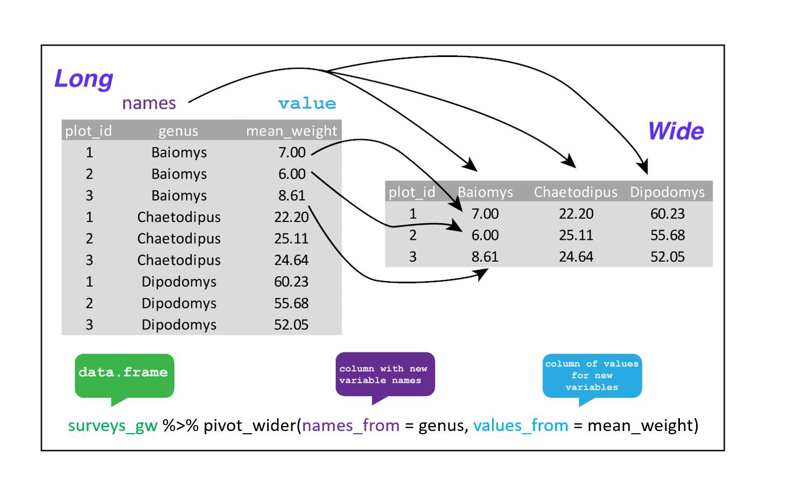
We could now plot comparisons between the weight of genera in different plots, although we may wish to fill in the missing values first.
R
surveys_gw |>
pivot_wider(names_from = genus, values_from = mean_weight, values_fill = 0) |>
head()
Pivot_longer
The opposing situation could occur if we had been provided with data
in the form of surveys_wide, where the genus names are
column names, but we wish to treat them as values of a genus variable
instead.
In this situation we are gathering the column names and turning them into a pair of new variables. One variable represents the column names as values, and the other variable contains the values previously associated with the column names.
pivot_longer() takes four principal arguments:
- the data
- cols indicates the columns to pivot into longer format (or those not to pivot)
- names_to indicates the name of the column to create from the data stored in the column names of data.
- values_to indicates the name of the column to create from the data stored in cell values.
To recreate surveys_gw from surveys_wide we
would set names_to genus and values_to
mean_weight and use all columns except plot_id
for the key variable. Here we exclude plot_id from being
pivoted.
R
surveys_long <- surveys_wide |>
pivot_longer(cols = -plot_id, names_to = "genus", values_to = "mean_weight")
str(surveys_long)
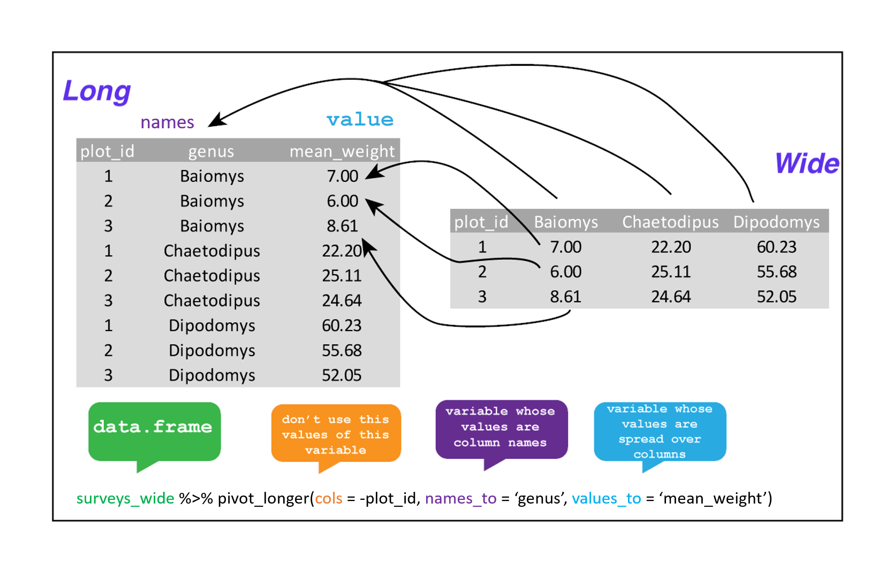
Note that now the NA genera are included in the new
pivot_longer format. Using pivot_wider and then pivot_longer can be a
useful way to balance out a dataset so every replicate has the same
composition.
We could also have used a specification for what columns to include.
This can be useful if you have a large number of identifying columns,
and it’s easier to specify what to pivot than what to leave alone. And
if the columns are directly adjacent, we don’t even need to list them
all out - just use the : operator!
R
surveys_wide |>
pivot_longer(cols = Baiomys:Spermophilus, names_to = "genus", values_to = "mean_weight") |>
head()
Challenge
The surveys data set has two measurement columns:
hindfoot_length and weight. This makes it
difficult to do things like look at the relationship between mean values
of each measurement per year in different plot types. Let’s walk through
a common solution for this type of problem.
Use
pivot_longer()to create a dataset where we have a key column calledmeasurementand avaluecolumn that takes on the value of eitherhindfoot_lengthorweight. Hint: You’ll need to specify which columns are being pivoted.With this new data set, calculate the average of each
measurementin eachyearfor each differentplot_type. Thenpivot_wider()them into a data set with a column forhindfoot_lengthandweight. Hint: You only need to specify the name and value columns forpivot_wider().
R
surveys_long <- surveys |>
pivot_longer(cols = c(hindfoot_length, weight), names_to ='measurement', values_to = 'value')
R
surveys_long |>
group_by(year, measurement, plot_type) |>
summarize(mean_value = mean(value, na.rm=TRUE)) |>
pivot_wider(names_from = measurement, values_from = mean_value)
Exporting data
Now that you have learned how to use
dplyr to extract information from or
summarize your raw data, you may want to export these new data sets to
share them with your collaborators or for archival.
Similar to the read_csv() function used for reading CSV
files into R, there is a write_csv() function that
generates CSV files from data frames.
Before using write_csv(), we are going to create a new
folder, data, in our working directory that will store this
generated dataset. We don’t want to write generated datasets in the same
directory as our raw data. It’s good practice to keep them separate. The
data_raw folder should only contain the raw, unaltered
data, and should be left alone to make sure we don’t delete or modify
it. In contrast, our script will generate the contents of the
data directory, so even if the files it contains are
deleted, we can always re-generate them.
In preparation for our next lesson on plotting, we are going to prepare a cleaned up version of the data set that doesn’t include any missing data.
Let’s start by removing observations of animals for which
weight and hindfoot_length are missing, or the
sex has not been determined:
R
surveys_complete <- surveys |>
filter(!is.na(weight), # remove missing weight
!is.na(hindfoot_length), # remove missing hindfoot_length
!is.na(sex)) # remove missing sex
Because we are interested in plotting how species abundances have changed through time, we are also going to remove observations for rare species (i.e., that have been observed less than 50 times). We will do this in two steps: first we are going to create a data set that counts how often each species has been observed, and filter out the rare species; then, we will extract only the observations for these more common species:
R
## Extract the most common species_id
species_counts <- surveys_complete |>
count(species_id) |>
filter(n >= 50)
## Only keep the most common species
surveys_complete <- surveys_complete |>
filter(species_id %in% species_counts$species_id)
To make sure that everyone has the same data set, check that
surveys_complete has 30463 rows and 13 columns by typing
dim(surveys_complete).
Now that our data set is ready, we can save it as a CSV file in our
data folder.
R
write_csv(surveys_complete, file = "data/surveys_complete.csv")
Stretch Challenge (Fiendish - 45 mins)
Data can also be imported and exported in the form of binary files. Have a look at documentation for the readBin() and writeBin() functions, as well as this helpful guide to binary files in r. Then try to export the surveys data as a binary file before importing the binary file back into r.
- dplyr is a package for making tabular data manipulation easier and tidyr reshapes data so that it is in a convenient format for plotting or analysis. They are both part of the tidyverse package.
- A subset of columns from a dataframe can be selected using
select(). - To choose rows based on a specific criterion, use
filter(). - Pipes let you take the output of one function and send it directly to the next, which is useful when you need to do many things to the same dataset.
- To create new columns based on the values in existing columns, use
mutate(). - Many data analysis tasks can be approached using the
split-apply-combine paradigm: split the data into groups, apply some
analysis to each group, and then combine the results. This can be
achieved using the
group_by()andsummarize()functions. - Dates can be formatted using the package ‘lubridate’.
- To reshape data between wide and long formats, use
pivot_wider()andpivot_longer()from the tidyr package. - Export data from a dataframe to a csv file using
write_csv().
Content from Day 3: Visualising Data
Last updated on 2026-05-22 | Edit this page
Overview
Questions
- How can I create publication-quality plots from data in R?
- How do I map data variables to visual properties in ggplot2?
- How can I customise the appearance of a plot?
- How do I save plots to a file?
Objectives
- Produce scatter plots, boxplots, and time series plots using ggplot.
- Set universal plot settings.
- Describe what faceting is and apply faceting in ggplot.
- Modify the aesthetics of an existing ggplot plot (including axis labels and color).
- Build complex and customized plots from data in a data frame.
If you didn’t finish the previous day (or are having problems with the data) run this to create the needed environment.
R
library("tidyverse")
dir.create(file.path("data_raw"), showWarnings = FALSE)
dir.create(file.path("data"), showWarnings = FALSE)
download.file(url = "https://ndownloader.figshare.com/files/2292169", destfile = "data_raw/portal_data_joined.csv")
surveys <- read_csv("data_raw/portal_data_joined.csv")
surveys <- surveys |>
filter(!is.na(weight)) |>
mutate(weight_kg = weight / 1000)
surveys_complete <- surveys |>
filter(!is.na(weight),
!is.na(hindfoot_length),
!is.na(sex))
species_counts <- surveys_complete |>
count(species_id) |>
filter(n >= 50)
surveys_complete <- surveys_complete |>
filter(species_id %in% species_counts$species_id)
write_csv(surveys_complete, "data/surveys_complete.csv")
We start by loading the required packages.
ggplot2 is included in the
tidyverse package.
R
library("tidyverse")
If not still in the workspace, load the data we saved in the previous lesson.
R
surveys_complete <- read_csv("data/surveys_complete.csv")
Plotting with ggplot2
ggplot2 is a plotting package that
makes it simple to create complex plots from data in a data frame. It
provides a more programmatic interface for specifying what variables to
plot, how they are displayed, and general visual properties. Therefore,
we only need minimal changes if the underlying data change or if we
decide to change from a bar plot to a scatterplot. This helps in
creating publication quality plots with minimal amounts of adjustments
and tweaking.
ggplot2 functions like data in the
‘long’ format, i.e., a column for every dimension, and a row for every
observation. Well-structured data will save you lots of time when making
figures with ggplot2
ggplot graphics are built step by step by adding new elements. Adding layers in this fashion allows for extensive flexibility and customization of plots.
To build a ggplot, we will use the following basic template that can be used for different types of plots:
ggplot(data = <DATA>, mapping = aes(<MAPPINGS>)) + <GEOM_FUNCTION>()- use the
ggplot()function and bind the plot to a specific data frame using thedataargument
R
ggplot(data = surveys_complete)
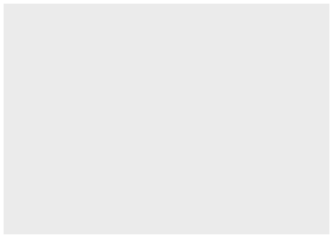
- define an aesthetic mapping (using the aesthetic (
aes) function), by selecting the variables to be plotted and specifying how to present them in the graph, e.g. as x/y positions or characteristics such as size, shape, color, etc.
R
ggplot(data = surveys_complete, mapping = aes(x = weight, y = hindfoot_length))
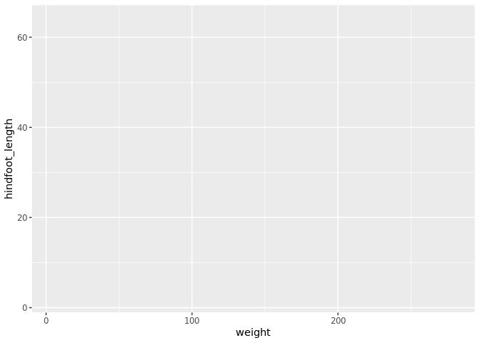
- add ‘geoms’ – graphical representations of the data in the plot
(points, lines, bars).
ggplot2offers many different geoms; we will use some common ones today, including:-
geom_point()for scatter plots, dot plots, etc. -
geom_boxplot()for, well, boxplots! -
geom_line()for trend lines, time series, etc.
-
To add a geom to the plot use + operator. Because we
have two continuous variables, let’s use geom_point()
first:
R
ggplot(data = surveys_complete, aes(x = weight, y = hindfoot_length)) +
geom_point()

The + in the ggplot2
package is particularly useful because it allows you to modify existing
ggplot objects. This means you can easily set up plot
“templates” and conveniently explore different types of plots, so the
above plot can also be generated with code like this:
R
# Assign plot to a variable
surveys_plot <- ggplot(data = surveys_complete,
mapping = aes(x = weight, y = hindfoot_length))
# Draw the plot
surveys_plot +
geom_point()
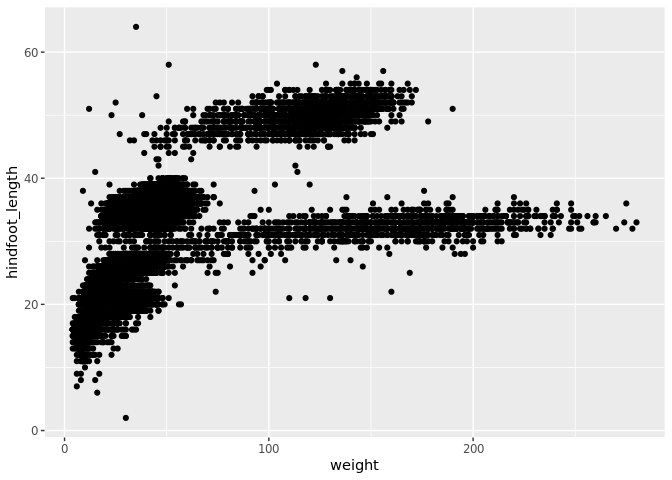
Notes
- Anything you put in the
ggplot()function can be seen by any geom layers that you add (i.e., these are universal plot settings). This includes the x- and y-axis you set up inaes(). - You can also specify aesthetics for a given geom independently of
the aesthetics defined globally in the
ggplot()function. - The
+sign used to add layers must be placed at the end of each line containing a layer. If, instead, the+sign is added in the line before the other layer,ggplot2will not add the new layer and will return an error message. - Including
data =andmapping =is optional, we include it here for clarity but it is often omitted.
R
# This is the correct syntax for adding layers
surveys_plot +
geom_point()
# This will not add the new layer and will return an error message
surveys_plot
+ geom_point()
Challenge
Scatter plots can be useful exploratory tools for small datasets. For
data sets with large numbers of observations, such as the
surveys_complete data set, overplotting of points can be a
limitation of scatter plots. One strategy for handling such settings is
to use hexagonal binning of observations. The plot space is tessellated
into hexagons. Each hexagon is assigned a color based on the number of
observations that fall within its boundaries. To use hexagonal binning
with ggplot2, first install the R package
hexbin from CRAN:
R
install.packages("hexbin")
library("hexbin")
Then use the geom_hex() function:
R
surveys_plot +
geom_hex()
- What are the relative strengths and weaknesses of a hexagonal bin plot compared to a scatter plot? Examine the above scatter plot and compare it with the hexagonal bin plot that you created.
Stretch Challenge (Intermediate - 15 mins)
Add a smoothing line to the plot so that it is easier to interpret.
You could also investigate whether a contour plot or heatmap improves
clarity of interpretation. Hint: Have a look at the ggplot2
cheat sheet
Building your plots iteratively
Building plots with ggplot2 is
typically an iterative process. We start by defining the dataset we’ll
use, lay out the axes, and choose a geom:
R
ggplot(data = surveys_complete, aes(x = weight, y = hindfoot_length)) +
geom_point()

Then, we start modifying this plot to extract more information from
it. For instance, we can add transparency (alpha) to avoid
overplotting:
R
ggplot(data = surveys_complete, aes(x = weight, y = hindfoot_length)) +
geom_point(alpha = 0.1)
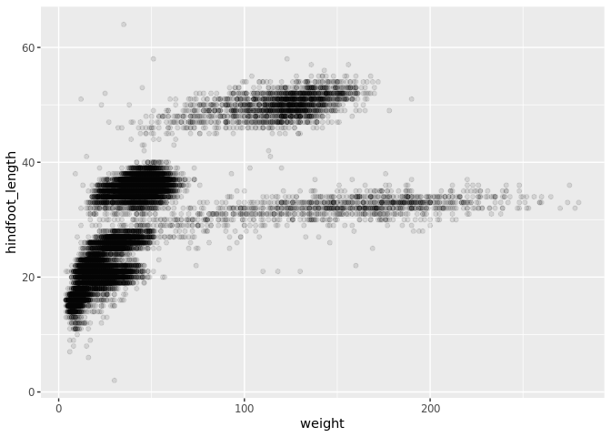
We can also add colors for all the points:
R
ggplot(data = surveys_complete, mapping = aes(x = weight, y = hindfoot_length)) +
geom_point(alpha = 0.1, color = "blue")
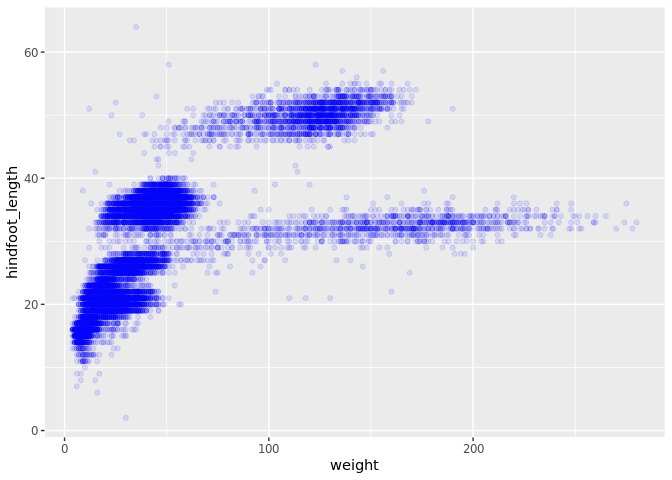
Or to color each species in the plot differently, you could use a
vector (which must have data-type factor) as an input to the argument
color. ggplot2 will
provide a different color corresponding to different values in the
vector. Here is an example where we color with
species_id:
R
ggplot(data = surveys_complete, mapping = aes(x = weight, y = hindfoot_length)) +
geom_point(alpha = 0.1, aes(color = species_id))
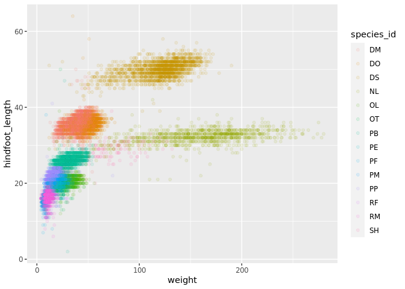
Challenge
Use what you just learned to create a scatter plot of
weight over species_id with the plot types
showing in different colors. Is this a good way to show this type of
data?
R
ggplot(data = surveys_complete, mapping = aes(x = species_id, y = weight)) +
geom_point(aes(color = plot_type))
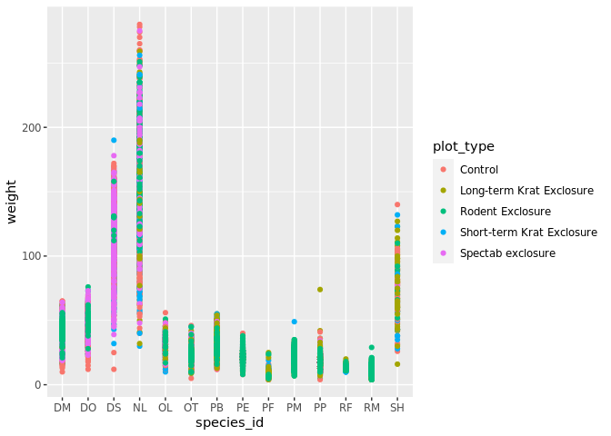
Boxplot
We can use boxplots to visualize the distribution of weight within each species:
R
ggplot(data = surveys_complete, mapping = aes(x = species_id, y = weight)) +
geom_boxplot()
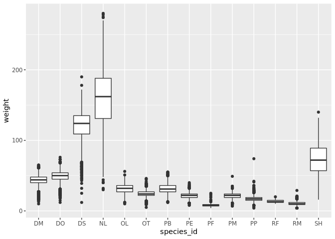
By adding points to the boxplot, we can have a better idea of the number of measurements and of their distribution:
R
ggplot(data = surveys_complete, mapping = aes(x = species_id, y = weight)) +
geom_boxplot(alpha = 0) +
geom_jitter(alpha = 0.3, color = "tomato")
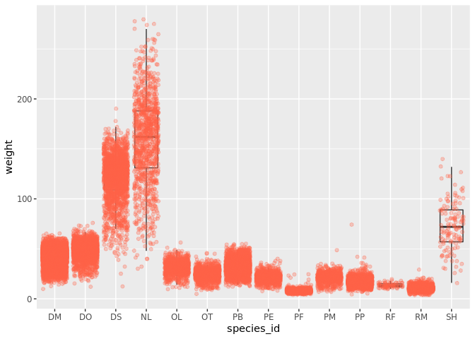
Notice how the boxplot layer is behind the jitter layer? What do you need to change in the code to put the boxplot in front of the points such that it’s not hidden?
Challenges
Boxplots are useful summaries, but hide the shape of the distribution. For example, if there is a bimodal distribution, it would not be observed with a boxplot. An alternative to the boxplot is the violin plot (sometimes known as a beanplot), where the shape (of the density of points) is drawn.
- Replace the box plot with a violin plot; see
geom_violin().
In many types of data, it is important to consider the scale of the observations. For example, it may be worth changing the scale of the axis to better distribute the observations in the space of the plot. Changing the scale of the axes is done similarly to adding/modifying other components (i.e., by incrementally adding commands). Try making these modifications:
- Represent weight on the log10 scale; see
scale_y_log10().
So far, we’ve looked at the distribution of weight within species. Try making a new plot to explore the distribution of another variable within each species.
Create boxplot for
hindfoot_length. Overlay the boxplot layer on a jitter layer to show actual measurements.Add color to the data points on your boxplot according to the plot from which the sample was taken (
plot_id).
Hint: Check the class for plot_id. Consider changing the
class of plot_id from integer to factor. Why does this
change how R makes the graph?
Stretch Challenge (Intermediate - 20 mins)
Add even more information to your boxplot by adding another variable as the colour or fill in the aesthetic mappings.
Try different ways of visualising error on your boxplot e.g. 95% error bars, pointrange, deciles, quintiles
Plotting time series data
Let’s calculate number of counts per year for each genus. First we need to group the data and count records within each group:
R
yearly_counts <- surveys_complete |>
count(year, genus)
Timelapse data can be visualized as a line plot with years on the x-axis and counts on the y-axis:
R
ggplot(data = yearly_counts, aes(x = year, y = n)) +
geom_line()
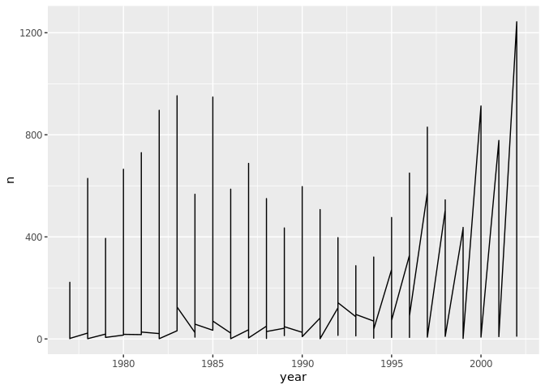
Unfortunately, this does not work because we plotted data for all the
genera together. We need to tell ggplot to draw a line for each genus by
modifying the aesthetic function to include
group = genus:
R
ggplot(data = yearly_counts, aes(x = year, y = n, group = genus)) +
geom_line()
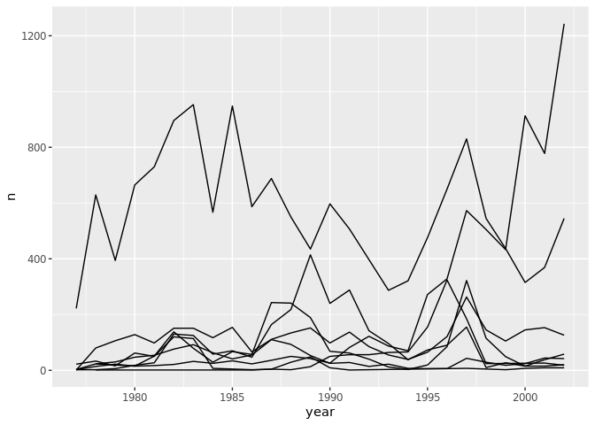
We will be able to distinguish species in the plot if we add colors
(using color also automatically groups the data):
R
ggplot(data = yearly_counts, aes(x = year, y = n, color = genus)) +
geom_line()
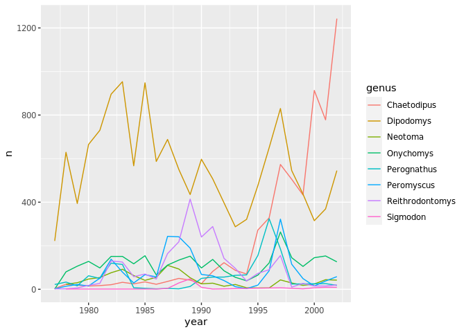
Integrating the pipe operator with ggplot2
In the previous lesson, we saw how to use the pipe operator
|> to use different functions in a sequence and create a
coherent workflow. We can also use the pipe operator to pass the
data argument to the ggplot() function. The
hard part is to remember that to build your ggplot, you need to use
+ and not |>.
R
yearly_counts |>
ggplot(mapping = aes(x = year, y = n, color = genus)) +
geom_line()

The pipe operator can also be used to link data manipulation with consequent data visualization.
R
yearly_counts_graph <- surveys_complete |>
count(year, genus) |>
ggplot(mapping = aes(x = year, y = n, color = genus)) +
geom_line()
yearly_counts_graph

Faceting
ggplot has a special technique called faceting
that allows the user to split one plot into multiple plots based on a
factor included in the dataset. In the following vars is
used to analyse the factors on which the plot will be split. We will use
it to make a time series plot for each species:
R
ggplot(data = yearly_counts, aes(x = year, y = n)) +
geom_line() +
facet_wrap(facets = vars(genus))
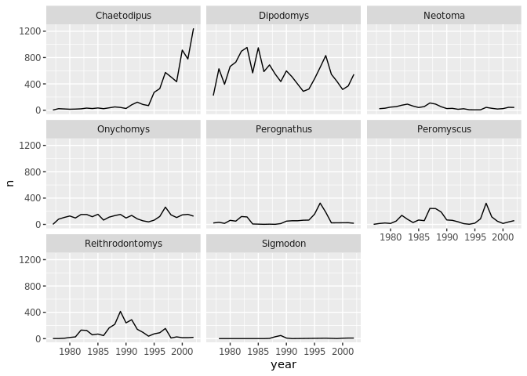
Now we would like to split the line in each plot by the sex of each
individual measured. To do that we need to make counts in the data frame
grouped by year, genus, and
sex:
R
yearly_sex_counts <- surveys_complete |>
count(year, genus, sex)
We can now make the faceted plot by splitting further by sex using
color (within a single plot):
R
ggplot(data = yearly_sex_counts, mapping = aes(x = year, y = n, color = sex)) +
geom_line() +
facet_wrap(facets = vars(genus))
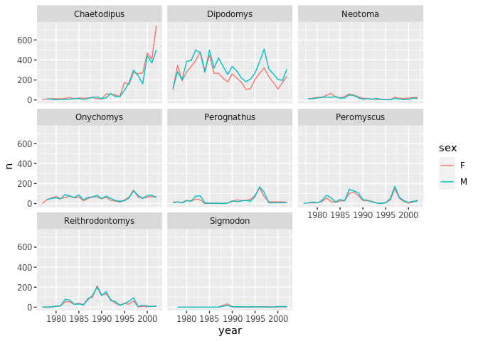
We can use facet_grid() to facet our plots by multiple variables, while specifying which variable we want displayed by row and which by column:
R
ggplot(data = yearly_sex_counts,
mapping = aes(x = year, y = n, color = sex)) +
geom_line() +
facet_grid(rows = vars(sex), cols = vars(genus))
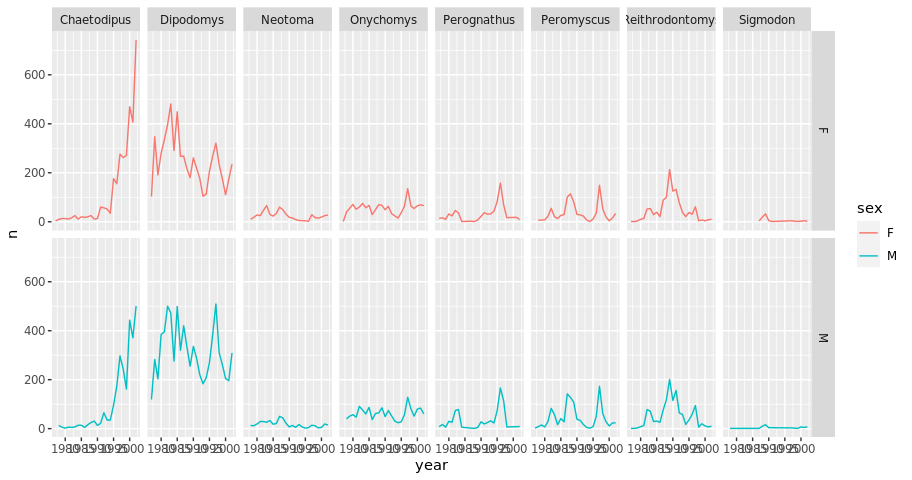
You can also organise the panels only by rows (or only by columns):
R
# One column, facet by rows
ggplot(data = yearly_sex_counts,
mapping = aes(x = year, y = n, color = sex)) +
geom_line() +
facet_grid(rows = vars(genus))
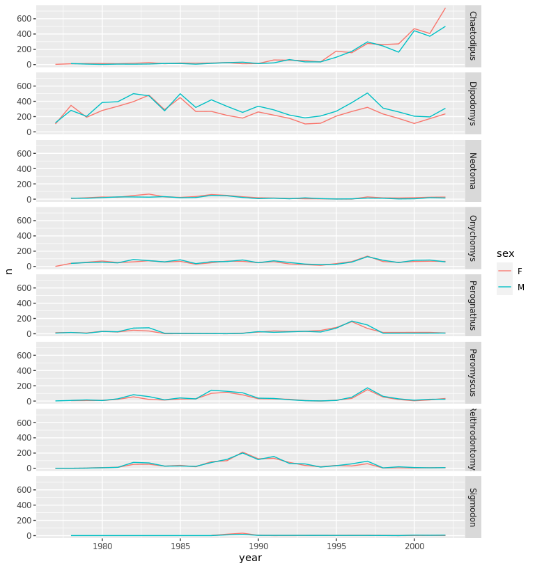
R
# One row, facet by column
ggplot(data = yearly_sex_counts,
mapping = aes(x = year, y = n, color = sex)) +
geom_line() +
facet_grid(cols = vars(genus))
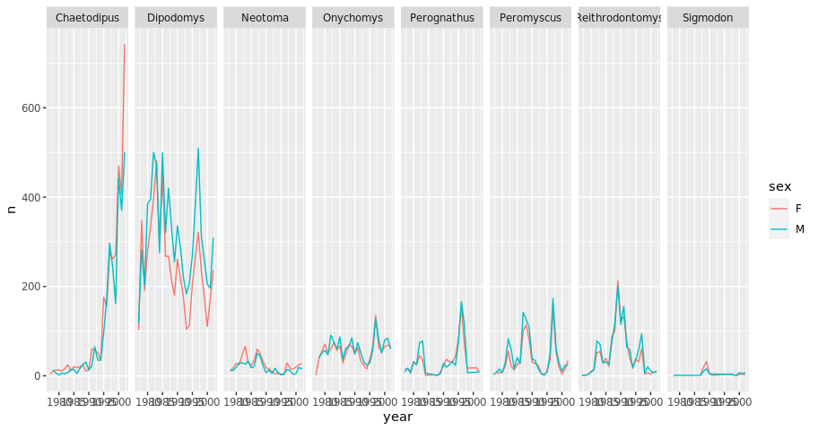
Note: ggplot2 before version 3.0.0 used
formulas to specify how plots are faceted. If you encounter
facet_grid/wrap(...) code containing
~, please read https://ggplot2.tidyverse.org/news/#tidy-evaluation.
ggplot2 themes
Usually plots with white background look more readable when printed.
Every single component of a ggplot graph can be customized
using the generic theme() function, as we will see below.
However, there are pre-loaded themes available that change the overall
appearance of the graph without much effort.
For example, we can change our previous graph to have a simpler white
background using the theme_bw() function:
R
ggplot(data = yearly_sex_counts,
mapping = aes(x = year, y = n, color = sex)) +
geom_line() +
facet_wrap(vars(genus)) +
theme_bw()
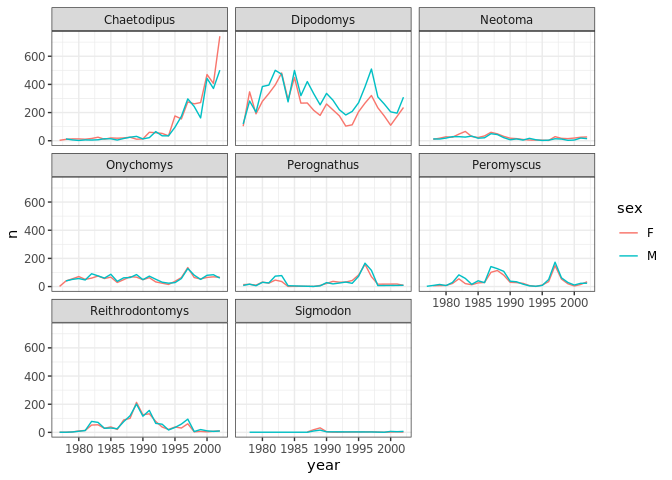
In addition to theme_bw(), which changes the plot
background to white, ggplot2 comes with
several other themes which can be useful to quickly change the look of
your visualization. The complete list of themes is available at https://ggplot2.tidyverse.org/reference/ggtheme.html.
theme_minimal() and theme_light() are popular,
and theme_void() can be useful as a starting point to
create a new hand-crafted theme.
The ggthemes package provides a wide variety of options.
Challenge
Use what you just learned to create a plot that depicts how the average weight of each species changes through the years.
R
yearly_weight <- surveys_complete |>
group_by(year, species_id) |>
summarize(avg_weight = mean(weight))
ggplot(data = yearly_weight, mapping = aes(x=year, y=avg_weight))+
geom_line() +
facet_wrap(vars(species_id)) +
theme_bw()
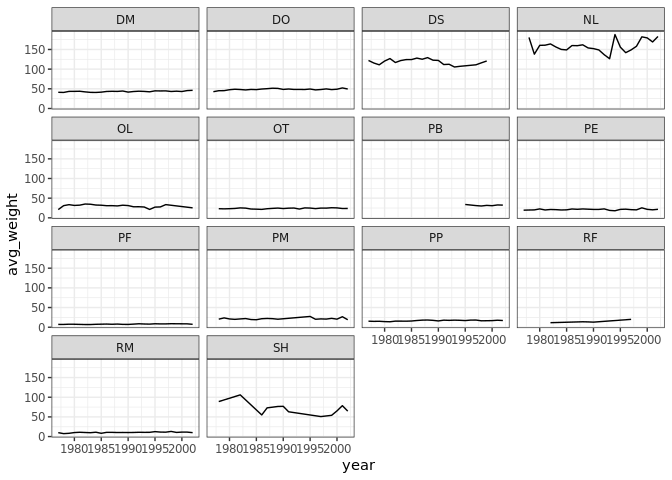
Customization
Take a look at the ggplot2
cheat sheet, and think of ways you could improve the plot.
Now, let’s change names of axes to something more informative than ‘year’ and ‘n’ and add a title to the figure:
R
ggplot(data = yearly_sex_counts, aes(x = year, y = n, color = sex)) +
geom_line() +
facet_wrap(vars(genus)) +
labs(title = "Observed genera through time",
x = "Year of observation",
y = "Number of individuals") +
theme_bw()
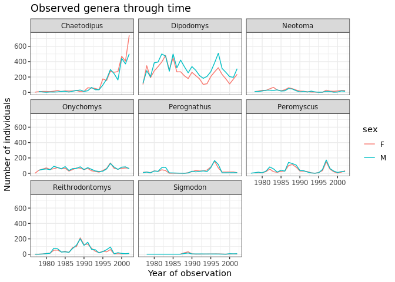
The axes have more informative names, but their readability can be
improved by increasing the font size. This can be done with the generic
theme() function:
R
ggplot(data = yearly_sex_counts, mapping = aes(x = year, y = n, color = sex)) +
geom_line() +
facet_wrap(vars(genus)) +
labs(title = "Observed genera through time",
x = "Year of observation",
y = "Number of individuals") +
theme_bw() +
theme(text=element_text(size = 16))
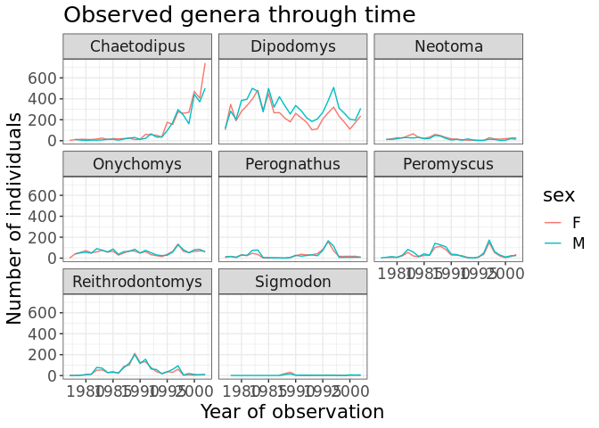
Note that it is also possible to change the fonts of your plots. If
you are on Windows, you may have to install the extrafont
package, and follow the instructions included in the README for this
package.
After our manipulations, you may notice that the values on the x-axis are still not properly readable. Let’s change the orientation of the labels and adjust them vertically and horizontally so they don’t overlap. You can use a 90 degree angle, or experiment to find the appropriate angle for diagonally oriented labels:
R
ggplot(data = yearly_sex_counts, mapping = aes(x = year, y = n, color = sex)) +
geom_line() +
facet_wrap(vars(genus)) +
labs(title = "Observed genera through time",
x = "Year of observation",
y = "Number of individuals") +
theme_bw() +
theme(axis.text.x = element_text(colour = "grey20", size = 12, angle = 90,
hjust = 0.5, vjust = 0.5),
axis.text.y = element_text(colour = "grey20", size = 12),
text = element_text(size = 16))
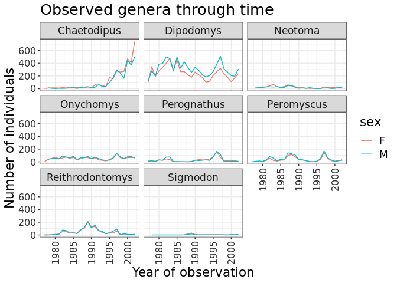
If you like the changes you created better than the default theme, you can save them as an object to be able to easily apply them to other plots you may create:
R
grey_theme <- theme(axis.text.x = element_text(colour="grey20", size = 12,
angle = 90, hjust = 0.5,
vjust = 0.5),
axis.text.y = element_text(colour = "grey20", size = 12),
text=element_text(size = 16))
ggplot(surveys_complete, aes(x = species_id, y = hindfoot_length)) +
geom_boxplot() +
grey_theme
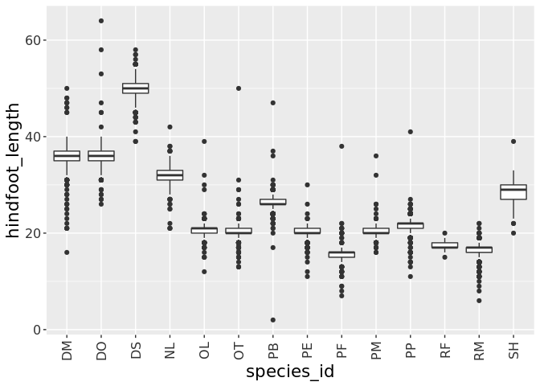
Challenge
With all of this information in hand, please take another five
minutes to either improve one of the plots generated in this exercise or
create a beautiful graph of your own. Use the RStudio ggplot2
cheat sheet for inspiration.
Here are some ideas:
- Try using a different color palette using RColorBrewer.
- See if you can change the thickness of the lines.
- Can you find a way to change the name of the legend? What about its labels?
Arranging and exporting plots
Faceting is a great tool for splitting one plot into multiple plots,
but sometimes you may want to produce a single figure that contains
multiple plots using different variables or even different data frames.
The gridExtra package allows us to combine
separate ggplots into a single figure using
grid.arrange():
R
library(gridExtra)
spp_weight_boxplot <- ggplot(data = surveys_complete,
aes(x = species_id, y = weight)) +
geom_boxplot() +
labs(x = "Species",
y = expression(log[10](Weight))) +
scale_y_log10() +
labs()
spp_count_plot <- ggplot(data = yearly_counts,
aes(x = year, y = n, color = genus)) +
geom_line() +
labs(x = "Year", y = "Abundance")
grid.arrange(spp_weight_boxplot, spp_count_plot, ncol = 2, widths = c(4, 6))
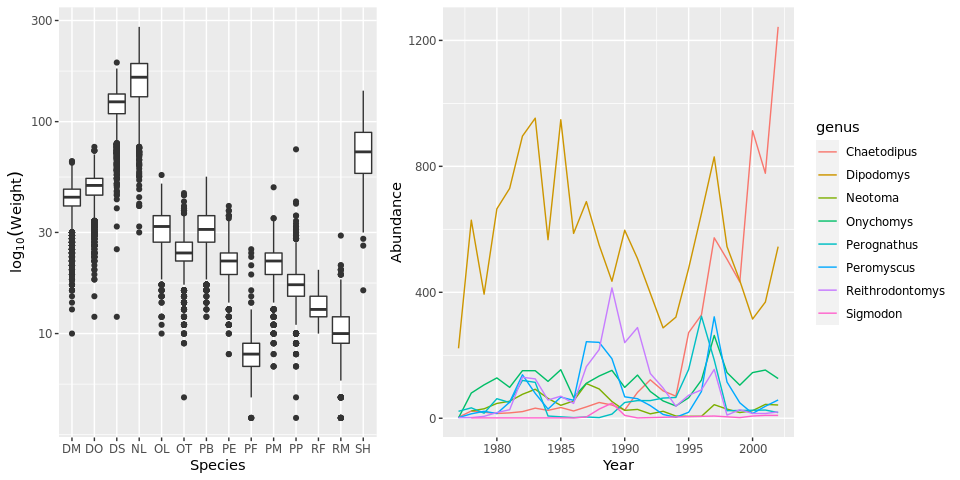
In addition to the ncol and nrow arguments,
used to make simple arrangements, there are tools for constucting
more complex layouts.
After creating your plot, you can save it to a file in your favorite format. The Export tab in the Plot pane in RStudio will save your plots at low resolution, which will not be accepted by many journals and will not scale well for posters.
Instead, use the ggsave() function, which allows you
easily change the dimension and resolution of your plot by adjusting the
appropriate arguments (width, height and
dpi):
R
my_plot <- ggplot(data = yearly_sex_counts,
aes(x = year, y = n, color = sex)) +
geom_line() +
facet_wrap(vars(genus)) +
labs(title = "Observed genera through time",
x = "Year of observation",
y = "Number of individuals") +
theme_bw() +
theme(axis.text.x = element_text(colour = "grey20", size = 12, angle = 90,
hjust = 0.5, vjust = 0.5),
axis.text.y = element_text(colour = "grey20", size = 12),
text = element_text(size = 16))
ggsave("fig/name_of_file.png", my_plot, width = 15, height = 10)
## This also works for grid.arrange() plots
combo_plot <- grid.arrange(spp_weight_boxplot, spp_count_plot, ncol = 2,
widths = c(4, 6))
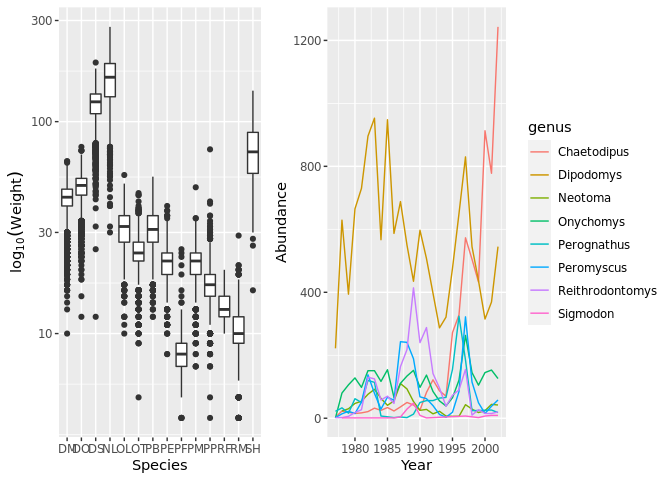
R
ggsave("fig/combo_plot_abun_weight.png", combo_plot, width = 10, height = 6, dpi = 300)
Note: The parameters width and height also
determine the font size in the saved plot.
- ggplot2 is a plotting package that makes it simple to create complex plots from data in a data frame.
- Define an aesthetic mapping (using the
aesfunction), by selecting the variables to be plotted and specifying how to present them in the graph. - Add ‘geoms’ – graphical representations of the data in the plot
using
geom_point()for a scatter plot,geom_boxplot()for a boxplot, andgeom_line()for a line plot. - Faceting splits one plot into multiple plots based on a factor from the dataset.
- Every single component of a ggplot graph can be customized using the
generic
theme()function. However, there are pre-loaded themes available that change the overall appearance of the graph without much effort. - The gridExtra package allows us to combine separate ggplots into a
single figure using
grid.arrange(). - Use
ggsave()to save a plot and edit the arguments (height, width, dpi) to change the dimension and resolution.